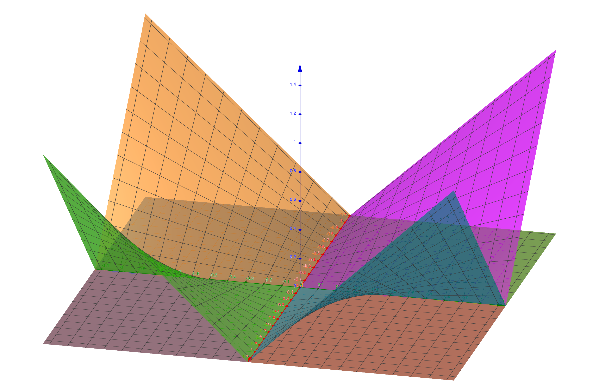
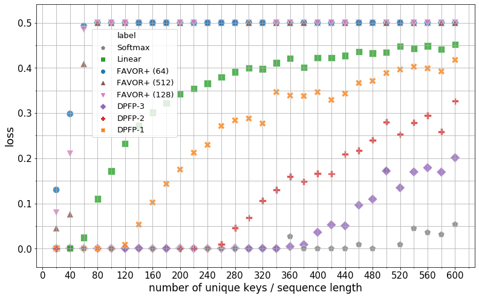
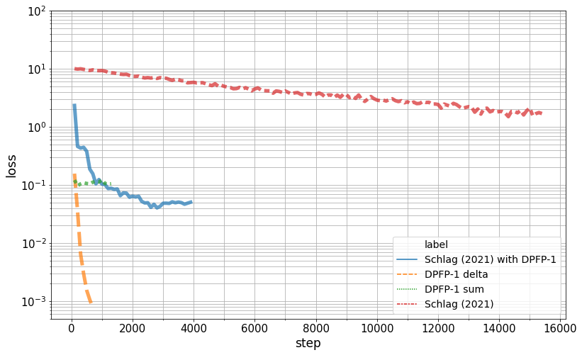
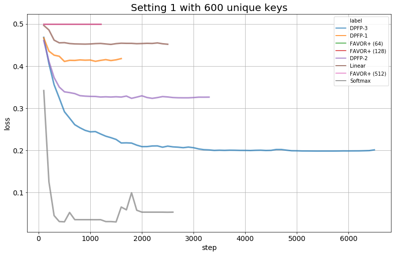
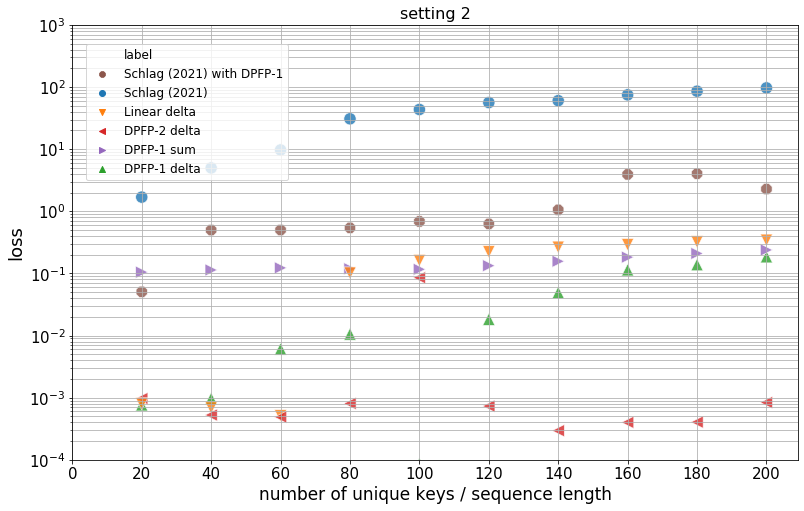

Linear Transformers Are Secretly Fast Weight Programmers
Abstract摘要
We show the formal equivalence of linearised self-attention mechanisms and fast weight controllers from the early ’90s, where a “slow” neural net learns by gradient descent to program the “fast weights” of another net through sequences of elementary programming instructions which are additive outer products of self-invented activation patterns (today called keys and values). Such Fast Weight Programmers (FWPs) learn to manipulate the contents of a finite memory and dynamically interact with it. We infer a memory capacity limitation of recent linearised softmax attention variants, and replace the purely additive outer products by a delta rule-like programming instruction, such that the FWP can more easily learn to correct the current mapping from keys to values. The FWP also learns to compute dynamically changing learning rates. We also propose a new kernel function to linearise attention which balances simplicity and effectiveness. We conduct experiments on synthetic retrieval problems as well as standard machine translation and language modelling tasks which demonstrate the benefits of our methods.
我们证明了线性化自注意力机制与 20 世纪 90 年代初的快速权重控制器在形式上的等价性；在后者中，一个“慢速”神经网络通过梯度下降学习，利用基本编程指令序列对另一个网络的“快速权重”进行编程，这些指令是对自行生成的激活模式（如今称为键和值）进行外积累加。此类快速权重编程器（FWPs）学习操纵有限容量存储器中的内容，并与其进行动态交互。我们推导出近期线性化 softmax 注意力变体的存储容量限制，并用类似 delta 规则的编程指令替代纯粹的外积累加，使 FWP 能够更容易地学会修正当前从键到值的映射。FWP 还学习计算动态变化的学习率。我们还提出了一种用于线性化注意力的新核函数，兼顾简洁性与有效性。我们在合成检索问题以及标准机器翻译和语言建模任务上开展了实验，验证了所提方法的优势。
Keywords:关键词：
1 Introduction1 引言
Transformers (Vaswani et al., 2017) have achieved impressive results in a myriad of sequence processing tasks, including machine translation, language modelling (Al-Rfou et al., 2019; Dai et al., 2019; Baevski & Auli, 2019; Radford et al., 2019), and question answering (Devlin et al., 2019), domains previously dominated by recurrent neural networks (Graves, 2013; Bahdanau et al., 2015).
Transformers (Vaswani et al., 2017) 在众多序列处理任务中取得了令人瞩目的成果，包括机器翻译、语言建模 (Al-Rfou et al., 2019; Dai et al., 2019; Baevski & Auli, 2019; Radford et al., 2019) 和问答 (Devlin et al., 2019)，这些领域此前由循环神经网络占据主导地位 (Graves, 2013; Bahdanau et al., 2015)。
The core component of a Transformer is the self-attention mechanism (Cheng et al., 2016; Parikh et al., 2016; Lin et al., 2017) which was recently connected to the modern Hopfield network (Ramsauer et al., 2021; Krotov & Hopfield, 2016; Demircigil et al., 2017). It extends a form of attention (Bahdanau et al., 2015) originally introduced to complement recurrent neural networks, e.g., (Hochreiter & Schmidhuber, 1997). While relinquishing the recurrence property, all computations across the time axis can be parallelised. However, this comes with drawbacks: self-attention computations scale quadratically with sequence length while the memory of the model grows linearly. Therefore, practitioners are forced to limit the context window to a reasonable size, which in turn makes it impossible to capture longer-term dependencies.
Transformer 的核心组件是自注意力机制 (Cheng et al., 2016; Parikh et al., 2016; Lin et al., 2017)，近期研究将其与现代 Hopfield 网络联系起来 (Ramsauer et al., 2021; Krotov & Hopfield, 2016; Demircigil et al., 2017)。该机制扩展了一种注意力形式 (Bahdanau et al., 2015)，这种注意力形式最初用于补充循环神经网络，例如 (Hochreiter & Schmidhuber, 1997)。通过舍弃循环特性，沿时间轴的所有计算均可并行化。然而，这也带来了弊端：自注意力的计算量随序列长度呈二次增长，而模型的内存占用呈线性增长。因此，实践者不得不将上下文窗口限制在合理的大小，这又使模型无法捕捉更长期的依赖关系。
Recent work proposed “linear Transformers” with constant size memory and time complexity linear in sequence length (Katharopoulos et al., 2020; Choromanski et al., 2021; Peng et al., 2021; Shen et al., 2018). This complexity reduction is mainly due to a linearisation of the softmax (reviewed in Sec. 3.2).
近期研究提出了“线性 Transformers”，其存储器大小恒定，时间复杂度与序列长度呈线性关系 (Katharopoulos et al., 2020; Choromanski et al., 2021; Peng et al., 2021; Shen et al., 2018)。这种复杂度的降低主要源于对 softmax 的线性化（第 3.2 节将对此进行回顾）。
Here we emphasize the formal equivalence of this family of linear Transformers and the Fast Weight Controllers or Fast Weight Programmers (FWPs) from the ’90s (Schmidhuber, 1991; Schmidhuber, 1992; Schmidhuber, 1993; Schmidhuber, AI Blog, 2021) (apart from normalisation). The memories of such FWPs contain key-value associations, and an FWP can learn to reprogram them through sequences of differentiable elementary instructions (also called update rules), which are additive outer products between keys and values invented by the FWP.
在此，我们强调，这一类线性 Transformers 与 20 世纪 90 年代的快速权重控制器或快速权重编程器（FWPs）在形式上等价（归一化除外）(Schmidhuber, 1991; Schmidhuber, 1992; Schmidhuber, 1993; Schmidhuber, AI Blog, 2021)。此类 FWP 的存储器包含键值关联，FWP 可以学习通过一系列可微的基本指令（也称为更新规则）对这些关联重新编程，这些指令是对 FWP 自行生成的键和值进行外积累加。
This view allows us to derive a limitation of the memory capacity of linear Transformers and similar models. When the sequence length exceeds storage capacity, the model may end up in an overcapacity regime (discussed in depth in Sec. 4.1). To properly operate under such a regime, the model should learn to dynamically interact with the memory contents and selectively decide which key-value associations to keep and which ones to delete. The purely additive instruction may be inappropriate for this purpose. Therefore, inspired by recent work on FWPs (Schlag et al., 2021), we introduce an improved programming instruction akin to the famous error-correcting delta-rule (Widrow & Hoff, 1960).
这一视角使我们能够推导出线性 Transformers 及类似模型的存储容量限制。当序列长度超出存储容量时，模型最终可能进入超容量状态（第 4.1 节将对此进行深入讨论）。为了在这种状态下正常运行，模型应学会与存储器内容动态交互，并有选择地决定保留哪些键值关联、删除哪些键值关联。纯粹的累加指令可能不适合这一目的。因此，受近期关于 FWP 的研究 (Schlag et al., 2021) 启发，我们引入了一种改进的编程指令，类似于著名的误差校正 delta 规则 (Widrow & Hoff, 1960)。
Furthermore, softmax linearisation techniques for Transformers are still underexplored. The existing techniques are either very simplistic (Katharopoulos et al., 2020) or mathematically well explained but complex (Choromanski et al., 2021; Peng et al., 2021). We provide a comprehensive comparison and propose a new method which is both simple and effective.
此外，针对 Transformers 的 softmax 线性化技术仍有待充分探索。现有技术要么过于简单 (Katharopoulos et al., 2020)，要么虽有充分的数学解释，却较为复杂 (Choromanski et al., 2021; Peng et al., 2021)。我们进行了全面比较，并提出了一种既简单又有效的新方法。
We demonstrate the benefits of the proposed methods on our own synthetic retrieval dataset (Sec. 6.1), the standard WMT14 English to German machine translation task (Sec. 6.2), and the Wikitext-103 (Merity et al., 2017) language modelling task (Sec. 6.3).
我们在自行构建的合成检索数据集（第 6.1 节）、标准 WMT14 英语到德语机器翻译任务（第 6.2 节）以及 Wikitext-103 (Merity et al., 2017) 语言建模任务（第 6.3 节）上展示了所提方法的优势。
2 Background on Fast Weight Programmers2 快速权重编程器背景
Here we review the concepts of Fast Weight Programmers (FWPs) before relating them to linear Transformer variants in Sec. 3.
在第 3 节将快速权重编程器（FWPs）与线性 Transformer 变体联系起来之前，我们先在此回顾其相关概念。
In standard neural networks, the weights remain fixed after training, unlike the activations, which change depending on the inputs at test time. The general idea of fast weights is to make the weights also variable and input-dependent. This concept was called synaptic modulation (von der Malsburg, 1981), a method for variable binding in neural networks (see e.g. the recent survey by Greff et al. (2020)), or dynamic connections (Feldman, 1982). Von der Malsburg defines the effective weights as a (multiplicative) superposition of conventional, context-independent slow weights, and fast changing, context-dependent fast weights. Hinton & Plaut (1987) studied a net with (additive) superposition of two sets of weights with two different learning rates in a scenario of model retraining. Before 1991, however, no network learned by gradient descent to quickly compute the changes of the fast weight storage of another network or of itself.
在标准神经网络中，权重在训练后保持固定，而激活则随测试时的输入而变化。快速权重的基本思想是使权重也能够变化并依赖于输入。这一概念被称为突触调制 (von der Malsburg, 1981)，是一种用于神经网络中变量绑定的方法（例如，参见 Greff et al. (2020) 近期的综述），也被称为动态连接 (Feldman, 1982)。Von der Malsburg 将有效权重定义为常规的、与上下文无关的慢速权重与快速变化的、依赖于上下文的快速权重的（乘法）叠加。Hinton & Plaut (1987) 在模型重新训练的场景中，研究了一个将两组具有不同学习率的权重进行（加法）叠加的网络。然而，在 1991 年之前，尚无网络通过梯度下降学会快速计算另一个网络或其自身的快速权重存储的变化。
Context-dependent FWPs were introduced in two-network systems of the early ’90s (Schmidhuber, 1991; Schmidhuber, 1992; Schmidhuber, 1993; Schmidhuber, AI Blog, 2021). A traditional slow net with slow weights continually changes or reprograms the fast weights of a fast net, making the fast weights effectively dependent on the spatio-temporal context of a given input stream. Simply put, the slow net learns to program its fast net. Among the proposed elementary differentiable instructions that the slow net can use to program the fast weights, a particularly attractive one makes use of outer products (Schmidhuber, 1991; Schmidhuber, 1992): for a sequential input $\{{\bm{x}}^{(i)}\}_{i=1}^{L},{\bm{x}}^{(i)}\in\mathbb{R}^{d_{\text{in}}}$, the model outputs the sequence $\{{\bm{y}}^{(i)}\}_{i=1}^{L},{\bm{y}}^{(i)}\in\mathbb{R}^{d_{\text{out}}}$ as
依赖于上下文的 FWPs 最早被引入 90 年代初的双网络系统中 (Schmidhuber, 1991; Schmidhuber, 1992; Schmidhuber, 1993; Schmidhuber, AI Blog, 2021)。具有慢速权重的传统慢速网络不断改变或重新编程快速网络的快速权重，使快速权重实际上依赖于给定输入流的时空上下文。简言之，慢速网络学习如何对其快速网络进行编程。在所提出的、可供慢速网络用于编程快速权重的基本可微指令中，一种特别有吸引力的指令利用了外积 (Schmidhuber, 1991; Schmidhuber, 1992)：对于序列输入 $\{{\bm{x}}^{(i)}\}_{i=1}^{L},{\bm{x}}^{(i)}\in\mathbb{R}^{d_{\text{in}}}$，模型按如下方式输出序列 $\{{\bm{y}}^{(i)}\}_{i=1}^{L},{\bm{y}}^{(i)}\in\mathbb{R}^{d_{\text{out}}}$
where $\otimes$ denotes the outer product, $\sigma$ is an activation function, ${\bm{W}}_{a}$ and ${\bm{W}}_{b}$ are trainable slow weights, while the fast weights ${\bm{W}}^{(i)}$ are generated at each time step $i$ and serve as a short-term memory. This is a key-value associative memory model in which the write operation is based on a summation (Eq. 2) and the retrieval is a matrix-vector multiplication (Eq. 3). Schmidhuber (1993) describes a recurrent version and discusses “internal spotlights of attention” (such attention terminology is now widely used in the context of transformers). The use of outer products results in a model of associations similar to tensor product presentations (Smolensky, 1990). In fact, outer-product based associative memory can be found in numerous works since Hebb’s informal rule (Hebb, 1949) and its more concrete formal variants (Steinbuch, 1961; Steinbuch & Piske, 1963; Kohonen, 1972; Palm, 1980) including Hopfield networks (Hopfield, 1982; Little, 1974) and bi-directional associative nets (Kosko, 1988). However, these authors described pre-wired rules to associate given patterns with each other. Their systems did not learn to use such rules for associating self-invented patterns like the FWPs since 1991.
其中，$\otimes$ 表示外积，$\sigma$ 是激活函数，${\bm{W}}_{a}$ 和 ${\bm{W}}_{b}$ 是可训练的慢速权重，而快速权重 ${\bm{W}}^{(i)}$ 在每个时间步 $i$ 生成，并充当短期记忆。这是一个键值联想记忆模型，其中写入操作基于求和（式 2），检索操作则是矩阵与向量的乘法（式 3）。Schmidhuber (1993) 描述了一个循环版本，并讨论了“内部注意力聚光灯”（此类注意力术语如今已广泛用于 Transformer 的语境中）。使用外积得到的联想模型类似于张量积表示 (Smolensky, 1990)。事实上，自 Hebb 的非形式化规则 (Hebb, 1949) 及其更具体的形式化变体 (Steinbuch, 1961; Steinbuch & Piske, 1963; Kohonen, 1972; Palm, 1980) 提出以来，许多工作中都可以见到基于外积的联想记忆，包括 Hopfield 网络 (Hopfield, 1982; Little, 1974) 和双向联想网络 (Kosko, 1988)。然而，这些作者描述的是将给定模式相互关联的预设规则。他们的系统并未像自 1991 年以来的 FWPs 那样，学会利用这些规则来关联自行创造的模式。
The concept of FWPs has been revisited recently (Ba et al., 2016; Schlag & Schmidhuber, 2017), also under different names, e.g., hypernetworks (Ha et al., 2017; Perez et al., 2018; Galanti & Wolf, 2020), dynamic plasticity (Miconi et al., 2018; Miconi et al., 2019), dynamic convolution (Klein et al., 2015; Noh et al., 2016; Jia et al., 2016), or lambda networks (Bello, 2021) used for applications including meta-learning (Munkhdalai & Yu, 2017; Munkhdalai & Trischler, 2018; Munkhdalai et al., 2019; Kirsch & Schmidhuber, 2020). FWPs recently also improved memory models through explicit mechanisms for facilitating the replacement of deprecated information and updating associations (Schlag & Schmidhuber, 2018; Schlag et al., 2021).
近期，FWPs 的概念再次受到研究 (Ba et al., 2016; Schlag & Schmidhuber, 2017)，也以不同名称出现，例如超网络 (Ha et al., 2017; Perez et al., 2018; Galanti & Wolf, 2020)、动态可塑性 (Miconi et al., 2018; Miconi et al., 2019)、动态卷积 (Klein et al., 2015; Noh et al., 2016; Jia et al., 2016) 或 lambda networks (Bello, 2021)，并被用于包括元学习在内的应用 (Munkhdalai & Yu, 2017; Munkhdalai & Trischler, 2018; Munkhdalai et al., 2019; Kirsch & Schmidhuber, 2020)。近期，FWPs 还通过用于促进替换过时信息和更新关联的显式机制，改进了记忆模型 (Schlag & Schmidhuber, 2018; Schlag et al., 2021)。
3 Relation to Transformers3 与 Transformers 的关系
Ba et al. (2016) have already pointed out a relation between a variant of outer product-based FWPs (Schmidhuber, 1993) and attention (Bahdanau et al., 2015). Katharopoulos et al. (2020) have analysed linearised transformers. We review these derivations, emphasising the relation between Transformers and the FWPs of the previous section.
Ba et al. (2016) 已经指出，基于外积的 FWPs 的一种变体 (Schmidhuber, 1993) 与注意力 (Bahdanau et al., 2015) 之间存在关联。Katharopoulos et al. (2020) 分析了线性化的 Transformer。我们回顾这些推导，着重阐述 Transformers 与上一节所述 FWPs 之间的关系。
3.1 Self-Attention Without Softmax Is a Fast Weight Programmer3.1 不使用 Softmax 的自注意力是一种快速权重编程器
A self-attention layer in auto-regressive Transformers (Vaswani et al., 2017) maps an input sequence $\{{\bm{x}}^{(i)}\}_{i=1}^{L},{\bm{x}}^{(i)}\in\mathbb{R}^{d\times 1}$ to an output sequence $\{{\bm{y}}^{(i)}\}_{i=1}^{L},{\bm{y}}^{(i)}\in\mathbb{R}^{d_{\text{value}}\times 1}$ as
自回归 Transformers (Vaswani et al., 2017) 中的自注意力层按如下方式将输入序列 $\{{\bm{x}}^{(i)}\}_{i=1}^{L},{\bm{x}}^{(i)}\in\mathbb{R}^{d\times 1}$ 映射为输出序列 $\{{\bm{y}}^{(i)}\}_{i=1}^{L},{\bm{y}}^{(i)}\in\mathbb{R}^{d_{\text{value}}\times 1}$
where $[{\bm{A}},{\bm{a}}]$ denotes the concatenation of vector ${\bm{a}}$ to matrix ${\bm{A}}$ along the time dimension, $\mathrm{softmax}$ is applied along the time dimension, and ${\bm{W}}_{k}$, ${\bm{W}}_{v}$, ${\bm{W}}_{q}$ are trainable weight matrices. We omit the scaling by $1/\sqrt{d_{\text{key}}}$ inside the softmax without loss of generality.
其中，$[{\bm{A}},{\bm{a}}]$ 表示沿时间维度将向量 ${\bm{a}}$ 拼接到矩阵 ${\bm{A}}$，$\mathrm{softmax}$ 沿时间维度应用，${\bm{W}}_{k}$、${\bm{W}}_{v}$、${\bm{W}}_{q}$ 为可训练的权重矩阵。不失一般性，我们省略 softmax 内部的缩放因子 $1/\sqrt{d_{\text{key}}}$。
Now if we remove the softmax in Eq. 7 we obtain:
现在，如果去掉式 7 中的 softmax，可得：
Denoting by ${\bm{W}}^{(i)}$ the corresponding weight matrix generated from key and value vectors:
用 ${\bm{W}}^{(i)}$ 表示由键向量和值向量生成的相应权重矩阵：
we can rewrite Eqs. 4-7 such that they directly relate to Eqs. 1-3 where the activation function $\sigma$ is the identity function and without query projection ${\bm{W}}_{q}$:
我们可以改写式 4-7，使其直接对应于激活函数 $\sigma$ 为恒等函数且不使用查询投影 ${\bm{W}}_{q}$ 时的式 1-3：
3.2 Linearising Self-Attention3.2 自注意力的线性化
Instead of removing the softmax as in Sec. 3.1, prior works have introduced techniques for linearising the softmax (Tsai et al., 2019), which has been shown to improve computational efficiency of self-attention for long sequences (Katharopoulos et al., 2020; Choromanski et al., 2021; Peng et al., 2021).
以往的研究并未像第 3.1 节那样移除 softmax，而是引入了将 softmax 线性化的技术 (Tsai et al., 2019)，这些技术已被证明能够提高长序列自注意力的计算效率 (Katharopoulos et al., 2020; Choromanski et al., 2021; Peng et al., 2021)。
By writing the softmax explicitly, Eq. 7 can be written as:
将 softmax 显式展开后，式 7 可写为：
where $\kappa({\bm{k}},{\bm{q}})=\exp({\bm{k}}\cdot{\bm{q}})\in\mathbb{R}_{>0}$ is the softmax kernel and ${\bm{k}}\cdot{\bm{q}}={\bm{k}}^{\top}{\bm{q}}$ is the vector dot product.
其中，$\kappa({\bm{k}},{\bm{q}})=\exp({\bm{k}}\cdot{\bm{q}})\in\mathbb{R}_{>0}$ 为 softmax 核，${\bm{k}}\cdot{\bm{q}}={\bm{k}}^{\top}{\bm{q}}$ 为向量点积。
The general idea is to replace the softmax kernel $\kappa$ by another kernel: $\kappa^{\prime}({\bm{k}},{\bm{q}})=\phi({\bm{k}})^{\top}\phi({\bm{q}})$ where $\phi$ is a function $\mathbb{R}^{d_{\text{key}}}\rightarrow\mathbb{R}^{d_{\text{dot}}}$. We discuss the necessary properties of $\phi$ in Sec. 5.1. By replacing $\kappa$ in Eq. 12 by $\kappa^{\prime}$, we obtain
总体思路是用另一个核替换 softmax 核 $\kappa$：$\kappa^{\prime}({\bm{k}},{\bm{q}})=\phi({\bm{k}})^{\top}\phi({\bm{q}})$，其中 $\phi$ 是一个 $\mathbb{R}^{d_{\text{key}}}\rightarrow\mathbb{R}^{d_{\text{dot}}}$ 的函数。我们将在第 5.1 节讨论 $\phi$ 所需具备的性质。将式 12 中的 $\kappa$ 替换为 $\kappa^{\prime}$，可得
Using the outer-product notation, the numerator is analogous to the case without softmax (Sec. 3.1):
采用外积记法，分子与不使用 softmax 的情形（第 3.1 节）类似：
By introducing the fast weight matrix ${\bm{W}}^{(i)}$ and an additional vector ${\bm{z}}^{(i)}$ for the denominator,
引入快速权重矩阵 ${\bm{W}}^{(i)}$，并为分母额外引入一个向量 ${\bm{z}}^{(i)}$，
forward computations of linear Transformers can be written as (Katharopoulos et al., 2020):
线性 Transformer 的前向计算可写为 (Katharopoulos et al., 2020)：
which is a Fast Weight Programmer (Sec. 2) with normalisation. Hence, the core of linear Transformer variants are outer product-based Fast Weight Programmers.
这就是一个带有归一化的快速权重编程器（第 2 节）。因此，线性 Transformer 各种变体的核心是基于外积的快速权重编程器。
4 Analysing and Improving Linear Transformers as Fast Weight Programmers4 将线性 Transformer 视为快速权重编程器进行分析与改进
Viewing linear Transformer variants as Fast Weight Programmers provides us with two insights which we investigate in this work: their capacity limits as associative memories (Sec. 4.1), and their ineptness to edit previously stored associations (Sec. 4.2).
将线性 Transformer 的各种变体视为快速权重编程器，为我们带来了本文将探讨的两点认识：它们作为联想记忆的容量限制（第 4.1 节），以及它们难以编辑先前存储的关联（第 4.2 节）。
4.1 Capacity Limitation4.1 容量限制
Intuition.直观理解。
Endlessly adding new associations to a memory of finite size, as in Eq. 17, inevitably will reach a limit. In linear attention, information is stored in a matrix and is retrieved using matrix multiplication (see Eq. 19). As a consequence, to prevent associations from interfering with each other upon retrieval, the respective keys need to be orthogonal. Otherwise, the dot product will attend to more than one key and return a linear combination of values. With keys embedded in a $d_{\text{dot}}$ space, there cannot be more than $d_{\text{dot}}$ orthogonal vectors. That is, storing more than $d_{\text{dot}}$ associations will result in a retrieval error. In linear Transformers, when the length of the sequence is longer than $d_{\text{dot}}$, the model might be in such an overcapacity regime. While we experimentally demonstrate this effect on toy tasks (Sec. 6.1), prior work on tensor product representations allows for a more formal discussion.
如式 17 所示，向容量有限的记忆中不断添加新关联，必然会达到某个极限。在线性注意力中，信息存储在矩阵中，并通过矩阵乘法进行检索（见式 19）。因此，为了防止各个关联在检索时相互干扰，相应的键必须彼此正交。否则，点积就会关注多个键，并返回值的线性组合。当键嵌入在 $d_{\text{dot}}$ 维空间中时，正交向量的数量不可能超过 $d_{\text{dot}}$。也就是说，存储超过 $d_{\text{dot}}$ 个关联将导致检索错误。在线性 Transformer 中，当序列长度超过 $d_{\text{dot}}$ 时，模型可能就会处于这种超出容量的状态。我们将在简单任务上通过实验展示这一效应（第 6.1 节），而以往关于张量积表示的研究则为更形式化的讨论提供了基础。
Tensor Product Representation Theory.张量积表示理论。
Early work in connectionist research investigated the usage of distributed representations as a means for storing symbolic structures. One highly-influential work is the tensor-product-based variable binding mechanism (Smolensky, 1990). A tensor product representation (TPR) of a structured symbolic system consisting of a set of variables and values constructed from outer products of the so called role and filler vectors. These terms directly translate into keys and values in our context. The fast weight memories of Eq. 17 are the most basic form of such representations (second order tensors). Therefore, many results discussed in Smolensky’s work transfer to our model. In particular, Theorem 3.3 and 3.1 of Smolensky (1990) discuss more formally the crosstalk and retrieval error intuitively described in the previous paragraph.
联结主义研究的早期工作探讨了利用分布式表示存储符号结构的方法。其中一项极具影响力的工作是基于张量积的变量绑定机制 (Smolensky, 1990)。对于由一组变量和值组成的结构化符号系统，其张量积表示（TPR）由所谓的角色向量和填充向量的外积构造而成。在本文语境中，这两个术语直接对应于键和值。式 17 中的快速权重记忆是此类表示的最基本形式（二阶张量）。因此，Smolensky 的工作中讨论的许多结果同样适用于我们的模型。具体而言，Smolensky (1990) 的定理 3.3 和 3.1 对上一段中直观描述的串扰和检索错误进行了更形式化的讨论。
However, we also note an important difference: the classic TPRs of Smolensky (1990) are constructed with a priori knowledge of the symbolic structure. In contrast, our FWPs since 1991, including recent FWPs (Schlag & Schmidhuber, 2018), learn all the vectors involved in constructing such a representation.
然而，我们也注意到一个重要差异：Smolensky (1990) 的经典 TPR 是利用符号结构的先验知识构造的。相比之下，自 1991 年以来，我们的 FWP，包括近期的 FWP (Schlag & Schmidhuber, 2018)，都会学习构造此类表示所涉及的全部向量。
4.2 Improving the FWP’s Programming Instruction4.2 改进 FWP 的编程指令
Sec. 4.1 argues that the linear Transformers can end up in an overcapacity regime, if the sequence length $L$ exceeds the dimension $d_{\text{dot}}$ of the keys. Once in overcapacity, an ideal memory model should dynamically interact with the memory contents and selectively determine which associations to remember or to forget. This is in stark contrast to the standard Transformer which stores immutable pairs of key and value vectors by concatenation, thus increasing the storage size. While such models work well in practice, we consider a model’s capability to update previously acquired knowledge to be critical for many problems. Hence, from the perspective of dynamic interaction with the memory, the purely additive update rule of Eqs. 17 may be sub-optimal. This motivates us to improve the elementary differentiable programming instruction (i.e. the update rule) of FWPs.
第 4.1 节指出，如果序列长度 $L$ 超过键的维度 $d_{\text{dot}}$，线性 Transformer 可能会进入超容量状态。一旦进入超容量状态，理想的记忆模型应当与记忆内容动态交互，并有选择地决定记住或遗忘哪些关联。这与标准 Transformer 形成鲜明对比，后者通过拼接来存储不可变的键向量和值向量对，从而增大存储规模。尽管此类模型在实践中表现良好，但我们认为，模型更新先前所获知识的能力对于许多问题至关重要。因此，从与记忆动态交互的角度来看，式 17 中的纯加性更新规则可能并非最优。这促使我们改进 FWP 的基本可微编程指令（即更新规则）。
Inspired by the recent work by Schlag et al. (2021), we propose a basic instruction that essentially implements the famous error-correcting delta rule (Widrow & Hoff, 1960) in an end-to-end differentiable way, such that the FWP can learn to use it wisely, through self-invented, dynamically changing learning rates. Given a new input key-value pair $({\bm{k}}^{(i)},{\bm{v}}^{(i)})$, the FWP first accesses the current state of the memory ${\bm{W}}^{(i-1)}$ and retrieves the value $\bar{{\bm{v}}}^{(i)}$ currently paired with the key ${\bm{k}}^{(i)}$. Then the model stores a convex combination ${\bm{v}}^{(i)}_{\text{new}}$ of the retrieved value $\bar{{\bm{v}}}^{(i)}$ and the input ${\bm{v}}^{(i)}$ using an interpolation weight $0\leq\beta^{(i)}\leq 1$ also generated by the model. The model thus sequentially transforms an input sequence $\{{\bm{x}}^{(i)}\}_{i=1}^{L},{\bm{x}}^{(i)}\in\mathbb{R}^{d\times 1}$ into an output sequence $\{{\bm{y}}^{(i)}\}_{i=1}^{L},{\bm{y}}^{(i)}\in\mathbb{R}^{d_{\text{value}}\times 1}$ as:
受 Schlag et al. (2021) 近期工作的启发，我们提出了一条基本指令，其实质是以端到端可微的方式实现著名的纠错 delta 规则 (Widrow & Hoff, 1960)，使 FWP 能够通过自行设计且动态变化的学习率，学会合理使用该指令。给定一个新的输入键值对 $({\bm{k}}^{(i)},{\bm{v}}^{(i)})$，FWP 首先访问记忆的当前状态 ${\bm{W}}^{(i-1)}$，并检索当前与键 ${\bm{k}}^{(i)}$ 配对的值 $\bar{{\bm{v}}}^{(i)}$。随后，模型使用同样由自身生成的插值权重 $0\leq\beta^{(i)}\leq 1$，存储检索值 $\bar{{\bm{v}}}^{(i)}$ 与输入值 ${\bm{v}}^{(i)}$ 的凸组合 ${\bm{v}}^{(i)}_{\text{new}}$。由此，模型依次将输入序列 $\{{\bm{x}}^{(i)}\}_{i=1}^{L},{\bm{x}}^{(i)}\in\mathbb{R}^{d\times 1}$ 转换为输出序列 $\{{\bm{y}}^{(i)}\}_{i=1}^{L},{\bm{y}}^{(i)}\in\mathbb{R}^{d_{\text{value}}\times 1}$，具体如下：
where ${\bm{W}}_{\beta}\in\mathbb{R}^{1\times d}$, and $\sigma$ is the sigmoid function. The interpolation weight $\beta^{(i)}$ is the “write-strength” as it defines to which extent the new value will replace the previous value. We note that while $\beta^{(i)}$ only depends on ${\bm{x}}^{(i)}$, in a multi-layer model, ${\bm{x}}^{(i)}$ has the full context information except in the first layer. We set ${\bm{W}}^{(0)}=0$ and ${\bm{z}}^{(0)}=0$. Then the fast weight update rule and the final output ${\bm{y}}^{(i)}$ are defined as follows (see Appendix A.1 for detailed derivations):
其中，${\bm{W}}_{\beta}\in\mathbb{R}^{1\times d}$，$\sigma$ 为 sigmoid 函数。插值权重 $\beta^{(i)}$ 即为“写入强度”，因为它决定了新值替换原有值的程度。我们注意到，尽管 $\beta^{(i)}$ 仅依赖于 ${\bm{x}}^{(i)}$，但在多层模型中，除第一层外，${\bm{x}}^{(i)}$ 均包含完整的上下文信息。我们设定 ${\bm{W}}^{(0)}=0$ 且 ${\bm{z}}^{(0)}=0$。随后，快速权重更新规则和最终输出 ${\bm{y}}^{(i)}$ 定义如下（详细推导见附录 A.1）：
As shown in Eq. 24, our programming instruction or update rule is effectively a delta rule with a dynamic learning rate $\beta^{(i)}$. The model thus learns to correct the current key to value association. In Appendix B, we formally show the advantage of this approach over the gated update rule concurrently proposed by Peng et al. (2021).
如式 24 所示，我们的编程指令或更新规则实质上是一种具有动态学习率 $\beta^{(i)}$ 的 delta 规则。因此，模型能够学会修正当前的键到值的关联。在附录 B 中，我们形式化地证明了该方法相较于 Peng et al. (2021) 同期提出的门控更新规则的优势。
Normalisation.归一化。
In the equations above, no normalisation is applied to the value we retrieve. A straightforward normalisation can be obtained by following the derivation in Sec. 3.2, i.e. by introducing an accumulator:
在上述方程中，我们未对检索到的值进行归一化。按照第 3.2 节中的推导，可以得到一种直接的归一化方式，即引入一个累加器：
and replacing Eqs. 20 and 25 respectively by:
并将式 20 和式 25 分别替换为：
where we define $\bar{{\bm{v}}}^{(1)}=0$. In this approach, the output ${\bm{y}}^{(i)}$ is a weighted average of $\beta^{(j)}({\bm{v}}^{(j)}-\bar{{\bm{v}}}^{(j)})$ for $1\leq j\leq i$. We refer to this approach as attention normalisation.
其中，我们定义 $\bar{{\bm{v}}}^{(1)}=0$。在该方法中，输出 ${\bm{y}}^{(i)}$ 是 $1\leq j\leq i$ 范围内 $\beta^{(j)}({\bm{v}}^{(j)}-\bar{{\bm{v}}}^{(j)})$ 的加权平均。我们将该方法称为注意力归一化。
This approach, however, has drawbacks. First, the accumulation of positive values in Eq. 26 always grows with the number of steps, and may result in instability. Second, specifically for our update rule, this normalisation is not sufficient to balance the weights between write and remove operations in Eq. 23 (see derivations in Appendix A.2). Here we propose a better approach based on simple normalisation. We divide the effective key and query vectors $\phi({\bm{k}}^{(i)})$ and $\phi({\bm{q}}^{(i)})$ by the sum of its components, e.g., for the query:
然而，该方法存在不足。首先，式 26 中正值的累加结果始终随步数增加而增大，可能导致不稳定。其次，具体到我们的更新规则，这种归一化不足以平衡式 23 中写入与移除操作之间的权重（推导见附录 A.2）。这里，我们提出一种基于简单归一化的更优方法。我们将有效键向量 $\phi({\bm{k}}^{(i)})$ 和有效查询向量 $\phi({\bm{q}}^{(i)})$ 分别除以各自分量之和，例如，对于查询向量：
before applying Eqs. 20-25. A general consequence of this normalisation is intuitively understood by noticing that the output of any matrix-vector operations (like Eq. 25) is a weighted sum of columns of the matrix where weights are the components of the vector; thus, if the vector components sum up to one, the operation can be viewed as an attention over the columns of the matrix. We provide further explanations and precise implications for our FWP in Appendix A.2. We refer to this approach as sum normalisation.
然后再应用式 20–25。这种归一化的一般效果可以通过以下事实直观理解：任何矩阵与向量运算（如式 25）的输出都是矩阵各列的加权和，其中权重为向量的各个分量；因此，如果向量分量之和为一，该运算就可以视为对矩阵各列的注意力。我们在附录 A.2 中提供了进一步解释，并说明了其对我们的 FWP 的具体影响。我们将该方法称为和归一化。
Since this is a simple substitution of $\phi({\bm{k}}^{(i)})$ and $\phi({\bm{q}}^{(i)})$ in Eqs. 20-25, one might still ask whether additional attention normalisation is needed. In language modelling experiments (Sec. 6.3), we show that this is not the case.
由于这只是对式 20–25 中的 $\phi({\bm{k}}^{(i)})$ 和 $\phi({\bm{q}}^{(i)})$ 进行简单替换，人们可能仍会问，是否还需要额外的注意力归一化。在语言建模实验（第 6.3 节）中，我们表明并不需要。
5 Linear Attention Functions5 线性注意力函数
The central component of softmax linearisation (Sec. 3.2) is the $\phi$ function which maps key and query vectors to the space where the dot product is executed: $\mathbb{R}^{d_{\text{key}}}\rightarrow\mathbb{R}^{d_{\text{dot}}}$. We first list desirable properties of such a function, and review the existing $\phi$ functions from the perspective of fast weight memories. Finally, we also propose our own $\phi$ function.
softmax 线性化（第 3.2 节）的核心组成部分是 $\phi$ 函数，该函数将键向量和查询向量映射到执行点积的空间：$\mathbb{R}^{d_{\text{key}}}\rightarrow\mathbb{R}^{d_{\text{dot}}}$。我们首先列出此类函数应具备的理想性质，并从快速权重记忆的视角回顾现有的 $\phi$ 函数。最后，我们还提出了自己的 $\phi$ 函数。
5.1 Properties5.1 性质
For Eq. 13 to define proper attention weights between 0 and 1, the codomain of $\phi$ should be positive. Another property of $\phi$ derives from the discussion of memory capacity in Sec. 4.1. The dimensionality of its codomain $d_{\text{dot}}$ defines the model’s capacity. Therefore, by including a transformation which projects the input dimension $d_{\text{key}}$ to a larger dimension $d_{\text{dot}}$, the $\phi$ function can potentially increase the upper bound of the capacity.
为了使式 13 定义出介于 0 和 1 之间的有效注意力权重，$\phi$ 的陪域应为正值域。$\phi$ 的另一项性质源自第 4.1 节中关于记忆容量的讨论。其陪域的维度 $d_{\text{dot}}$ 决定了模型的容量。因此，通过包含一个将输入维度 $d_{\text{key}}$ 投影到更高维度 $d_{\text{dot}}$ 的变换，$\phi$ 函数有可能提高容量的上界。
5.2 Katharopoulos’ Linear Attention5.2 Katharopoulos 的线性注意力
Katharopoulos et al. (2020) propose to use the simple element-wise $\mathrm{ELU}+1$ function (Clevert et al., 2016):
Katharopoulos et al. (2020) 提出使用简单的逐元素 $\mathrm{ELU}+1$ 函数 (Clevert et al., 2016)：
The choice of $\mathrm{ELU}$ over $\mathrm{ReLU}$ is motivated by non-zero gradients on the negative part. Importantly, as a simple element-wise function, this $\phi$ function preserves the dimension of the input key vector ($d_{\text{key}}=d_{\text{dot}}$), without modifying the memory capacity as discussed in Sec. 4.1.
选择 $\mathrm{ELU}$ 而非 $\mathrm{ReLU}$ 的原因在于前者在负值部分具有非零梯度。重要的是，作为一个简单的逐元素函数，该 $\phi$ 函数保持输入键向量的维度不变（$d_{\text{key}}=d_{\text{dot}}$），因此不会改变第 4.1 节所讨论的记忆容量。
5.3 FAVOR+5.3 FAVOR+
In contrast to Katharopoulos et al. (2020)’s $\phi$ function which merely satisfies positivity (and a good gradient) property, Choromanski et al. (2021) propose a mathematically rigorous method to approximate the softmax with random features. They propose the following $\phi$ function:
Katharopoulos et al. (2020) 的 $\phi$ 函数仅满足正值性（以及良好的梯度）这一性质，与之相比，Choromanski et al. (2021) 提出了一种利用随机特征近似 softmax 的数学上严谨的方法。他们提出了如下 $\phi$ 函数：
where the concatenation $\begin{bmatrix}{\bm{a}}\\ {\bm{b}}\end{bmatrix}$ of two vectors ${\bm{a}}$ and ${\bm{b}}$ is along the feature dimension, and ${\bm{R}}\in\mathbb{R}^{m\times d_{\textit{key}}}$ is a matrix with $m$ random features where each row vector ${\bm{r}}\in\mathbb{R}^{1\times d_{\textit{key}}}$ is drawn from $\mathcal{N}(0,\mathbf{I}_{d_{\text{key}}})$. A similar approach is also proposed by Peng et al. (2021).
其中，两个向量 ${\bm{a}}$ 和 ${\bm{b}}$ 的拼接 $\begin{bmatrix}{\bm{a}}\\ {\bm{b}}\end{bmatrix}$ 沿特征维度进行，${\bm{R}}\in\mathbb{R}^{m\times d_{\textit{key}}}$ 是一个包含 $m$ 个随机特征的矩阵，其中每个行向量 ${\bm{r}}\in\mathbb{R}^{1\times d_{\textit{key}}}$ 均从 $\mathcal{N}(0,\mathbf{I}_{d_{\text{key}}})$ 中采样。Peng et al. (2021) 也提出了类似的方法。
With FAVOR+, the dimension of the codomain $d_{\text{dot}}$ is $2m$ which increases the theoretical capacity of the memory if $2m>d_{\text{key}}$. At the same time, the model’s capacity is still limited, and equals the infinite capacity of the softmax memory only when $m$ goes to infinity, which is never achieved in practice. During training, we redraw these $m$ random vectors for each mini-batch. During evaluation, we draw a set of $m$ random vectors once, and keep them fixed. $m$ is the only hyperparameter of FAVOR+ and influences the quality of the softmax approximation. Choromanski et al. (2021) suggest to choose $m$ in the order of $d_{\textit{key}}\log(d_{\textit{key}})$. This sampling process is the main drawback of FAVOR+ as it introduces variance into the model’s output.
采用 FAVOR+ 时，陪域的维度 $d_{\text{dot}}$ 为 $2m$，当 $2m>d_{\text{key}}$ 时，这会提高记忆的理论容量。同时，模型的容量仍然有限，只有当 $m$ 趋于无穷大时，才等于 softmax 记忆的无限容量，而这在实践中永远无法实现。在训练期间，我们为每个小批次重新采样这 $m$ 个随机向量。在评估期间，我们一次性采样一组 $m$ 个随机向量，并将其固定。$m$ 是 FAVOR+ 唯一的超参数，会影响 softmax 近似的质量。Choromanski et al. (2021) 建议将 $m$ 选为 $d_{\textit{key}}\log(d_{\textit{key}})$ 量级。该采样过程是 FAVOR+ 的主要缺点，因为它会给模型的输出引入方差。
5.4 Deterministic Parameter-Free Projection (DPFP)5.4 确定性无参数投影（DPFP）
The two previous sub-sections highlight the sub-optimality of the existing $\phi$ functions. Sampling introduces extra complexity to FAVOR+ (Sec. 5.3), while the Linear Transformer (Sec. 5.2) lacks the ability to project up the dot product dimension. Here we propose an alternative approach called deterministic parameter-free projection (DPFP). It is deterministic and easy to compute like Linear Transformers while increasing the dot product dimension without requiring FAVOR+’s random features.
前两个小节突出了现有 $\phi$ 函数的次优性。采样给 FAVOR+（第 5.3 节）引入了额外的复杂性，而 Linear Transformer（第 5.2 节）则缺乏通过投影提高点积维度的能力。这里，我们提出一种名为确定性无参数投影（DPFP）的替代方法。它与 Linear Transformer 一样具有确定性且易于计算，同时能够提高点积维度，无需使用 FAVOR+ 的随机特征。
We begin with a low-dimensional example to foster an intuitive understanding before moving on to the general formulation. Consider 4 keys ${\bm{k}}^{(i)},i\in\{1,2,3,4\}$ in $\mathbb{R}^{2}$ and $\phi:\mathbb{R}^{2}\rightarrow\mathbb{R}^{4}_{\geq 0}$ where the $l$-th element of $\phi({\bm{x}})$ is generated by the partial function $\phi_{l}:\mathbb{R}^{2}\rightarrow\mathbb{R}_{\geq 0}$. We design $\phi$ such that it facilitates orthogonality in the projected space, i.e. $\phi({\bm{k}}^{(i)})\cdot\phi({\bm{k}}^{(j)})=0$ for $i\neq j$. Towards this end, we construct $\phi$ such that if $\phi_{l}({\bm{x}})>0$ then $\phi_{n}({\bm{x}})=0$ for all $n\neq l$. Such a constraint can be enforced by limiting the domains of the partial functions to be non-overlapping. With the element-wise rectifier function $r(a)=\max(0,a)$ the partial functions are defined as:
我们首先通过一个低维示例建立直观理解，然后再介绍一般形式。考虑 $\mathbb{R}^{2}$ 中的 4 个键 ${\bm{k}}^{(i)},i\in\{1,2,3,4\}$，以及 $\phi:\mathbb{R}^{2}\rightarrow\mathbb{R}^{4}_{\geq 0}$，其中 $\phi({\bm{x}})$ 的第 $l$ 个元素由分量函数 $\phi_{l}:\mathbb{R}^{2}\rightarrow\mathbb{R}_{\geq 0}$ 生成。我们设计 $\phi$，使其有助于在投影空间中实现正交性，即对于 $i\neq j$，有 $\phi({\bm{k}}^{(i)})\cdot\phi({\bm{k}}^{(j)})=0$。为此，我们构造 $\phi$，使得若 $\phi_{l}({\bm{x}})>0$，则对所有 $n\neq l$，均有 $\phi_{n}({\bm{x}})=0$。通过将各分量函数的定义域限制为互不重叠，可以施加这一约束。利用逐元素整流函数 $r(a)=\max(0,a)$，各分量函数定义如下：
Figure 1 illustrates this function. The elements of the 4-dimensional space are displayed as the $z$ component of the four coloured surfaces. The figure shows how each vector in the 2d plane will have a single non-zero component in the 4d space and equally splits the input space into four areas which will be orthogonal in the projected space.
图 1 展示了该函数。4 维空间中的各个元素以四个彩色曲面的 $z$ 分量表示。该图展示了 2 维平面中的每个向量如何在 4 维空间中仅具有一个非零分量，并将输入空间均分为四个区域，这些区域在投影空间中相互正交。

Figure 1: A visualisation of a DPFP from a 2d space (the xy-plane) to a 4d space (the four colored surfaces). Each surface is a partial function which represents one element of the 4d vector.
图 1：从 2 维空间（xy 平面）到 4 维空间（四个彩色曲面）的 DPFP 可视化。每个曲面都是一个分量函数，表示 4 维向量中的一个元素。
We generalise this method to higher dimensional inputs by constructing additional two-factor features. Given an input vector ${\bm{k}}\in\mathbb{R}^{d_{\text{key}}}$ and $i\in[1,2d_{\text{key}}]$, the partial function
我们通过构造额外的双因子特征，将该方法推广到更高维的输入。给定输入向量 ${\bm{k}}\in\mathbb{R}^{d_{\text{key}}}$ 和 $i\in[1,2d_{\text{key}}]$，分量函数
where $\nu\in\{1,2,..,d_{\text{key}}2-1\}$ is a capacity controlling hyperparameter. The codomain dimensionality of $\phi({\bm{k}})$ is thus $d_{\text{dot}}=2d_{\text{key}}\nu$. Eq. 37 is highly parallelisable because each partial function can be computed independently. This can be implemented in few lines of code as we show in Appendix C.
其中，$\nu\in\{1,2,..,d_{\text{key}}2-1\}$ 是控制容量的超参数。因此，$\phi({\bm{k}})$ 的陪域维数为 $d_{\text{dot}}=2d_{\text{key}}\nu$。式 37 具有很高的可并行性，因为每个分量函数都可以独立计算。如附录 C 所示，这只需几行代码即可实现。
Finally we note that Choromanski et al. (2021) empirically show that replacing $\exp$ in Eq. 32 by $\mathrm{ReLU}$ typically improves model performance. While this result has not been theoretically justified, it supports the design of our DPFP which aims for sparsity and orthogonality.
最后，我们指出，Choromanski et al. (2021) 通过实证表明，将式 32 中的 $\exp$ 替换为 $\mathrm{ReLU}$ 通常可以提升模型性能。尽管这一结果尚未得到理论论证，但它支持了我们旨在实现稀疏性和正交性的 DPFP 设计。
6 Experimental Results6 实验结果
Now we present our experimental results on synthetic retrieval problems (Sec. 6.1.1 and 6.1.2), machine translation (Sec. 6.2), and language modelling (Sec. 6.3).
现在，我们介绍在合成检索问题（第 6.1.1 节和第 6.1.2 节）、机器翻译（第 6.2 节）和语言建模（第 6.3 节）上的实验结果。
6.1 Synthetic Settings6.1 合成实验设置
We illustrate the capacity issue (Sec. 4.1) of linear attention and the effectiveness of our new update rule (Sec. 4.2) on two synthetic problems.
我们通过两个合成问题，展示线性注意力的容量问题（第 4.1 节）以及我们提出的新更新规则的有效性（第 4.2 节）。
In both settings, our toy problem consists of retrieving the correct value from a sequence of randomly sampled key-value associations when queried with one of the used keys. Crucially, the query is given at the end of the sequence, such that the model is not aware of it while processing the inputs. To succeed, the model has to learn to store the observed associations in its memory without interference.
在这两种设置中，我们的简化问题都是：给定一个由随机采样的键值关联组成的序列，当使用其中出现过的某个键进行查询时，检索出正确的值。关键在于，查询在序列末尾才给出，因此模型在处理输入时并不知道查询内容。为成功完成任务，模型必须学会将观测到的关联存储在记忆中，且不产生干扰。
Let $\mathcal{K}$ and $\mathcal{V}$ be the finite and fixed sets of keys and values and $S=|\mathcal{K}|=|\mathcal{V}|$. Then, the input to the model is the sequence $[(\mathsf{k},\mathsf{v})_{1},...,(\mathsf{k},\mathsf{v})_{L}]$ followed by $\mathsf{q}$ where every pair $(\mathsf{k},\mathsf{v})\in\mathcal{K}\times\mathcal{V}$ is sampled randomly, and $\mathsf{q}$ is randomly chosen to be one of the $L$ keys.
设 $\mathcal{K}$ 和 $\mathcal{V}$ 分别为有限且固定的键集合与值集合，并令 $S=|\mathcal{K}|=|\mathcal{V}|$。那么，模型的输入为序列 $[(\mathsf{k},\mathsf{v})_{1},...,(\mathsf{k},\mathsf{v})_{L}]$，其后接 $\mathsf{q}$，其中每个键值对 $(\mathsf{k},\mathsf{v})\in\mathcal{K}\times\mathcal{V}$ 均随机采样得到，而 $\mathsf{q}$ 则从这 $L$ 个键中随机选取。
Each value $\mathsf{v}^{(i)},i\in[1,..,S]$ is assigned a fixed one-hot vector ${\bm{v}}^{(i)}\in\mathbb{R}^{S}$. Hence, the set of value vectors is an orthonormal basis. In contrast, the vector embedding of the key symbols is the learned function $e:\mathcal{K}\rightarrow\mathbb{R}^{d_{\text{emb}}}$ and ${\bm{k}}={\bm{W}}_{K}[e(\mathsf{k});{\bm{v}}]$ where ${\bm{W}}_{K}\in\mathbb{R}^{d_{\text{key}}\times(d_{\text{emb}}+S)}$.
为每个值 $\mathsf{v}^{(i)},i\in[1,..,S]$ 分配一个固定的独热向量 ${\bm{v}}^{(i)}\in\mathbb{R}^{S}$。因此，值向量集合构成一组标准正交基。相比之下，键符号的向量嵌入由学习得到的函数 $e:\mathcal{K}\rightarrow\mathbb{R}^{d_{\text{emb}}}$ 给出，且 ${\bm{k}}={\bm{W}}_{K}[e(\mathsf{k});{\bm{v}}]$，其中 ${\bm{W}}_{K}\in\mathbb{R}^{d_{\text{key}}\times(d_{\text{emb}}+S)}$。
Following the $L$ write operations, the read function and the query vector ${\bm{q}}={\bm{W}}_{Q}e(\mathsf{q}),{\bm{W}}_{Q}\in\mathbb{R}^{d_{\text{key}}\times d_{\text{emb}}}$ are used to retrieve $\hat{{\bm{v}}}\in\mathbb{R}^{S}$ from memory. Finally, the loss is defined as $l(\hat{{\bm{v}}},{\bm{v}}^{*})=\sum_{j}^{S}\frac{1}{2}({\bm{v}}^{*}_{j}-\hat{{\bm{v}}}_{j})^{2}$ where ${\bm{v}}^{*}$ is the value vector assigned to $\mathsf{q}$ in the input sequence. Each model is trained in mini-batches using this loss and Adam with default hyperparameters unless stated otherwise. For evaluation, we sample 20 sequences and test all possible queries, e.g., with $S=100$ unique keys, the evaluation batch is of size $100*20=2000$.
在完成 $L$ 次写入操作后，使用读取函数和查询向量 ${\bm{q}}={\bm{W}}_{Q}e(\mathsf{q}),{\bm{W}}_{Q}\in\mathbb{R}^{d_{\text{key}}\times d_{\text{emb}}}$ 从记忆中检索 $\hat{{\bm{v}}}\in\mathbb{R}^{S}$。最后，将损失定义为 $l(\hat{{\bm{v}}},{\bm{v}}^{*})=\sum_{j}^{S}\frac{1}{2}({\bm{v}}^{*}_{j}-\hat{{\bm{v}}}_{j})^{2}$，其中 ${\bm{v}}^{*}$ 是输入序列中分配给 $\mathsf{q}$ 的值向量。除非另有说明，每个模型均采用该损失和使用默认超参数的 Adam 进行小批量训练。评估时，我们采样 20 个序列，并测试所有可能的查询，例如，当有 $S=100$ 个不同的键时，评估批量大小为 $100*20=2000$。
6.1.1 Setting 1: Testing Capacity6.1.1 设置 1：容量测试
In this setting, we experimentally demonstrate the capacity limit of linear attention (Sec. 4.1). We conduct experiments for the various $\phi$ functions described in Sec. 5. We fix $d_{\text{key}}$ to be $64$, while different $\phi$ functions produce different $d_{\text{dot}}$. We set the sequence length to be equal to the number of unique keys ($L=S$), and sample the keys and values without replacement to generate the sequences. By varying the sequence length $S$, our goal is to show that all linear attention models (using the simple sum update rule of Sec. 3.2) fail at retrieving when $S$ exceeds $d_{\text{dot}}$.
在此设置中，我们通过实验展示线性注意力的容量上限（第 4.1 节）。我们针对第 5 节中介绍的各种 $\phi$ 函数开展实验。我们将 $d_{\text{key}}$ 固定为 $64$，而不同的 $\phi$ 函数会产生不同的 $d_{\text{dot}}$。我们将序列长度设为不同键的数量（$L=S$），并对键和值进行无放回采样以生成序列。通过改变序列长度 $S$，我们的目标是表明，当 $S$ 超过 $d_{\text{dot}}$ 时，所有线性注意力模型（使用第 3.2 节中的简单求和更新规则）都会检索失败。
All models are trained with a mini-batch size of $32$ until the evaluation loss falls below $0.001$ or until lack of progress for $1000$ steps. In Figure 2, the best validation set performance for each model and each $S$ is displayed (for the learning curves see Appendix D.1). The number of unique keys is initially $S=20$ and is incremented by $20$ until $S=600$. The following models are compared: Softmax, Linear-Attention, FAVOR+ with 64, 128, and 512 random features, DPFP-$\nu$ with $\nu\in\{1,2,3\}$.
所有模型均以 $32$ 的小批量大小进行训练，直至评估损失降至 $0.001$ 以下，或连续 $1000$ 步未取得进展。图 2 展示了每个模型在每个 $S$ 下的最佳验证集性能（学习曲线见附录 D.1）。不同键的数量初始为 $S=20$，随后以 $20$ 为增量递增，直至 $S=600$。我们比较了以下模型：Softmax、Linear-Attention、分别使用 64、128 和 512 个随机特征的 FAVOR+，以及 $\nu\in\{1,2,3\}$ 的 DPFP-$\nu$。

Figure 2: Final evaluation loss of the softmax memory and various linear attention mechanisms on associative retrieval problems with the total number of unique associations ranging from 20 to 600. Each individual symbol is a model trained until convergence.
图 2：softmax 记忆和各种线性注意力机制在关联检索问题上的最终评估损失，其中不同关联的总数从 20 到 600 不等。每个单独的符号代表一个训练至收敛的模型。
The results support our theoretical analysis. Linear-Attention has a capacity of $64$ due to the choice of $d_{\text{key}}=d_{\text{dot}}=64$. Experimentally, Linear-Attention begins to accumulate errors with $60$ or more associations. Similarly, DPFP projections 1, 2 and 3 start to accumulate errors as they approach their respective limits at $128$, $256$, and $384$. FAVOR+, on the other hand, fails to achieve a loss of 0 in any experiment. Finally, as expected, softmax attention is outperforming all $\phi$ functions, although it struggles to fully converge with more than 500 keys.
这些结果支持了我们的理论分析。由于选择了 $d_{\text{key}}=d_{\text{dot}}=64$，Linear-Attention 的容量为 $64$。实验表明，当关联数量达到 $60$ 或更多时，Linear-Attention 开始累积误差。类似地，DPFP 投影 1、2 和 3 在分别接近各自的容量上限 $128$、$256$ 和 $384$ 时开始累积误差。另一方面，FAVOR+ 在所有实验中均未能达到 0 损失。最后，正如预期的那样，softmax 注意力的表现优于所有 $\phi$ 函数，但当键的数量超过 500 时，它也难以完全收敛。
6.1.2 Setting 2: Comparing Update Rules6.1.2 设置 2：更新规则的比较
In the second setting, we compare variations of the update rule. Unlike in setting 1, keys and values will be sampled with replacement and sequence length $L=2S$. As a result, in the same sequence, multiple keys can be re-assigned to a new value more than once. The expected value to retrieve is the most recent one associated with the query. With every new key, the previous value associated with this key deprecates and the model is required to update its finite size memory. The ability to update values associated with keys is essential to bind context-specific values to a key.
在第二种设置中，我们比较更新规则的不同变体。与设置 1 不同，键和值将通过有放回采样获得，且序列长度为 $L=2S$。因此，在同一序列中，多个键可能不止一次地被重新赋予新值。期望检索到的值是最近一次与查询关联的值。随着每个新键的到来，先前与该键关联的值便会失效，模型需要更新其有限大小的记忆。更新与键关联的值的能力，对于将特定上下文中的值绑定到键至关重要。
We use DPFP-1 as the $\phi$ function. The sequence length is fixed at 40 with 20 unique keys and values. While this setting does not exceed the capacity of DPFP-1, our result is independent of the capacity regime (see results for different $S$ and $\phi$ in Appendix D.2).
我们使用 DPFP-1 作为 $\phi$ 函数。序列长度固定为 40，包含 20 个不同的键和值。尽管这一设置未超出 DPFP-1 的容量，但我们的结果不依赖于容量所处的区间（不同 $S$ 和 $\phi$ 的结果见附录 D.2）。
We compare the proposed fast weight memory programming instruction with normalisation of Sec. 4.2 (denoted here by ours) to three baselines: the sum update rule of Sec. 3 (sum rule), and two variants of previous update rules (Schlag et al., 2021): Schlag (2021) and Schlag (2021) with DPFP. Schlag (2021) is simply the model from Schlag et al. (2021) ported to this setting (i.e. without the LSTM layer). Schlag (2021) has neither a $\phi$ function, nor the sum normalisation term of Sec. 4.2. Instead it uses a $\tanh$ nonlinearity for its key representations. As an ablation we replace it with our DPFP-1 but we don’t use the normalisation term of Sec. 4.2, which we refer to as Schlag (2021) with DPFP.
我们将第 4.2 节提出的带归一化的快速权重记忆编程指令（此处记为我们的方法）与三个基线进行比较：第 3 节的求和更新规则（求和规则），以及先前更新规则 (Schlag et al., 2021) 的两个变体：Schlag (2021) 和采用 DPFP 的 Schlag (2021)。Schlag (2021) 只是将 Schlag et al. (2021) 中的模型移植到这一设置中（即去掉 LSTM 层）。Schlag (2021) 既没有 $\phi$ 函数，也没有第 4.2 节的求和归一化项。它使用 $\tanh$ 非线性函数来表示键。作为消融实验，我们将其替换为我们的 DPFP-1，但不使用第 4.2 节的归一化项，并将这一变体称为采用 DPFP 的 Schlag (2021)。
Figure 3 presents the learning curves. They demonstrate that our new update rule outperforms all other variants. As expected, the baseline sum update rule fails.
图 3 展示了学习曲线。这些曲线表明，我们的新更新规则优于所有其他变体。正如预期的那样，基线求和更新规则未能奏效。

Figure 3: Learning curves for different update rules. Sequence length of 40 and 20 unique keys/values sampled with replacement.
图 3：不同更新规则的学习曲线。序列长度为 40，对 20 个不同的键/值进行有放回采样。
6.2 Machine Translation Experiments6.2 机器翻译实验
Here we compare $\phi$ functions on the standard machine translation task. We compare Linear Transformer (Katharopoulos et al., 2020), Performer (Choromanski et al., 2021) and our $\phi$ function DPFP (Sec. 5.4) to the regular Transformer, complementing prior comparisons, e.g., Tay et al. (2021).
这里，我们在标准机器翻译任务上比较 $\phi$ 函数。我们将 Linear Transformer (Katharopoulos et al., 2020)、Performer (Choromanski et al., 2021) 和我们的 $\phi$ 函数 DPFP（第 5.4 节）与常规 Transformer 进行比较，以补充先前的比较研究，例如 Tay et al. (2021)。
We use the standard WMT14 English to German Translation dataset and standard data setups (Ott et al., 2018; Vaswani et al., 2017). We adapt the recipe of Ott et al. (2019) (see Appendix E) and train Vaswani et al. (2017)’s “big” models for about 4 days on three V100 GPUs. We use the exact same training configurations for all models without model-specific hyper-parameter tuning. We only vary the model hyper-parameters $m$ in Performers and $\nu$ in DPFP models.
我们使用标准的 WMT14 英语到德语翻译数据集和标准数据设置 (Ott et al., 2018; Vaswani et al., 2017)。我们对 Ott et al. (2019) 的方案进行了调整（见附录 E），并在三块 V100 GPU 上训练 Vaswani et al. (2017) 的“big”模型约 4 天。我们对所有模型使用完全相同的训练配置，不进行针对特定模型的超参数调优。我们仅改变 Performer 中的模型超参数 $m$ 和 DPFP 模型中的模型超参数 $\nu$。
Table 1 shows the Bleu score (Papineni et al., 2002; Post, 2018) results. The Performer is as good as the basic Transformer when the number of samples $m$ is large enough (for $d_{\text{dot}}=512$, we have $m=256$). In fact, with $d_{\text{key}}=64$, the recommended value for $m$ is $d_{\text{dot}}\log(d_{\text{dot}})=266$. Our DPFP model outperforms the Linear Transformer as well as the Performer when $d_{\text{dot}}$ is relatively small; providing a good trade-off between simplicity and performance.
表 1 给出了 Bleu 分数 (Papineni et al., 2002; Post, 2018) 的结果。当样本数 $m$ 足够大时，Performer 的表现与基本 Transformer 相当（当 $d_{\text{dot}}=512$ 时，我们使用 $m=256$）。事实上，当 $d_{\text{key}}=64$ 时，$m$ 的推荐值为 $d_{\text{dot}}\log(d_{\text{dot}})=266$。当 $d_{\text{dot}}$ 相对较小时，我们的 DPFP 模型优于 Linear Transformer 和 Performer，在简洁性与性能之间实现了良好的权衡。
Table 1: WMT14 En-De Translation Bleu scores for various Transformer models. Neither model averaging, nor model specific tuning is done. Standard denotes the basic Transformer.
表 1：各种 Transformer 模型在 WMT14 En-De 翻译任务上的 Bleu 分数。未进行模型平均或针对特定模型的调优。Standard 表示基本 Transformer。
| Valid 验证 | Test 测试 | |||||
| $d_{\text{dot}}$ | 64 | 256 | 512 | 64 | 256 | 512 |
| Standard | 26.6 | - | - | 27.7 | - | - |
| Linear | 25.5 | - | - | 26.8 | - | - |
| Performer | 24.2 | 24.9 | 26.7 | 24.4 | 25.3 | 27.7 |
| DPFP (ours) DPFP（我们的方法） | - | 26.2 | 26.2 | - | 26.9 | 27.1 |
6.3 Language Modelling Experiments6.3 语言建模实验
Toy experimental Setting 2 (Sec. 6.1.2) illustrated the effect of our update rule. Now our goal is to confirm its effectiveness on a large-vocabulary word-level language modelling task, and investigate its further potential.
简化实验设置 2（第 6.1.2 节）展示了我们更新规则的效果。现在，我们的目标是在大词表词级语言建模任务上验证其有效性，并探究其进一步的潜力。
Experimental setups.实验设置。
Our update rule should be evaluated on a dataset with sufficiently long contextual dependencies. We use the standard WikiText-103 (Merity et al., 2017) dataset. WikiText-103 consists of long articles from Wikipedia; the training set contains about 28 K articles with a total of 103 M running words. This results in contextual text blocks of about 3600 words. The validation and test sets also contain similarly long dependencies, respectively with 218 K and 246 K running words for 60 articles each. The vocabulary size is about 268 K words.
我们的更新规则应在具有足够长的上下文依赖关系的数据集上进行评估。我们使用标准的 WikiText-103 (Merity et al., 2017) 数据集。WikiText-103 由 Wikipedia 中的长篇文章组成；训练集包含约 28 K 篇文章，总计 103 M 个词。这使得每个上下文文本块的长度约为 3600 个词。验证集和测试集也包含类似的长距离依赖关系，两者各包含 60 篇文章，分别有 218 K 和 246 K 个词。词表大小约为 268 K 个词。
We split the training data into $L$-word long segments (which is the backpropagation span). Unless stated otherwise, we treat these segments independently during training. For evaluation, we use a batch size of one, and go through the text with a sliding window of size $L$, taking into account only the last position for computing perplexity (except in the first segment where all positions are evaluated). This is usually done for Transformers with a limited context (Al-Rfou et al., 2019). Appendix F provides further experimental details.
我们将训练数据划分为长度为 $L$ 个单词的片段（即反向传播的跨度）。除非另有说明，训练时我们将这些片段视为相互独立。评估时，我们使用大小为 one 的批次，并以大小为 $L$ 的滑动窗口遍历文本，仅使用最后一个位置计算困惑度（第一个片段除外，其中所有位置均参与评估）。这是上下文受限的 Transformer 通常采用的做法 (Al-Rfou et al., 2019)。附录 F 提供了更多实验细节。
Table 2: WikiText-103 language model perplexity results showing effects of our update rule. The number of trainable parameters are almost the same for all models, up to the small difference introduced by gating in our update rule (16 K and 33 K parameters respectively for the small and medium configurations). We have $D=128$, $L=256$ (40 M parameters) in the small, and $D=256$, $L=384$ (90 M parameters) in the medium configuration. For Performers, $m$ is $8$ and $16$, respectively.
表 2：WikiText-103 语言模型的困惑度结果，展示了我们提出的更新规则的效果。所有模型的可训练参数数量几乎相同，仅存在由我们更新规则中的门控机制引入的微小差异（小型和中型配置分别增加 16 K 和 33 K 个参数）。小型配置采用 $D=128$、$L=256$（40 M 个参数），中型配置采用 $D=256$、$L=384$（90 M 个参数）。对于 Performer，$m$ 分别为 $8$ 和 $16$。
| Update 更新 | small 小型 | medium 中型 | |||
| Rule 规则 | Valid 验证集 | Test 测试集 | Valid 验证集 | Test 测试集 | |
| Transformer | - | 33.0 | 34.1 | 27.9 | 29.6 |
| Linear Transformer | sum 求和 | 37.1 | 38.3 | 31.1 | 33.0 |
| Delta Network | delta | 34.1 | 35.5 | 29.7 | 31.5 |
| Performer | sum 求和 | 39.0 | 39.6 | 32.2 | 33.8 |
| delta | 36.1 | 37.2 | 30.0 | 31.8 |
Effectiveness of our new update rule.我们提出的新更新规则的有效性。
We first evaluate our update rule in two configurations. In the small configuration, we set the model dimension (same for key, value, and query) $D$ to 128, and the training and evaluation context length $L$ to 256. We note that $D=H*d_{\text{dot}}$ where $H$ is the number of heads. $H$ is set to 8. The feed-forward layer dimension is 2048. The number of layers is 16 in all configurations. In the medium configuration, we set $D=256$ and $L=384$. Both configurations represent an overcapacity regime. We evaluate both Linear Transformers (Katharopoulos et al., 2020) and Performers (Choromanski et al., 2021). However, to keep the comparison simple, we set the capacity of Performers (Sec. 5.3) equal to the one of linear Transformers, by the right choice of projection dimension ($m=8$ and $m=16$, respectively, in small and medium configurations), even though this limits performance. We do not include DPFP here, since in both configurations even the smallest value for $\nu$ provides enough capacity. Here we investigate the effect of the update rule in an overcapacity scenario (see Appendix D.3 for experimental results in a non-overcapacity regime including DPFP). All models can be trained using two V100 GPUs in less than four days. We refer to the Linear Transformer with our delta update rule as a Delta Network. Table 2 shows the perplexity results. In both configurations, our update rule provides convincing improvements over the models with the sum update rule.
我们首先在两种配置下评估所提出的更新规则。在小型配置中，我们将模型维度（键、值和查询的维度相同）$D$ 设为 128，将训练和评估时的上下文长度 $L$ 设为 256。注意，$D=H*d_{\text{dot}}$，其中 $H$ 为头的数量。$H$ 设为 8。前馈层的维度为 2048。所有配置的层数均为 16。在中型配置中，我们设置 $D=256$ 和 $L=384$。两种配置均处于超容量情形。我们评估了 Linear Transformer (Katharopoulos et al., 2020) 和 Performer (Choromanski et al., 2021)。不过，为简化比较，我们通过适当选择投影维度（小型和中型配置分别采用 $m=8$ 和 $m=16$），使 Performer（第 5.3 节）的容量与 Linear Transformer 相同，尽管这会限制性能。此处未纳入 DPFP，因为在这两种配置下，即使 $\nu$ 取最小值，也能提供足够的容量。这里，我们研究更新规则在超容量情形下的效果（包含 DPFP 的非超容量情形实验结果见附录 D.3）。所有模型均可使用两块 V100 GPU 在不到四天的时间内完成训练。我们将采用所提出的 delta 更新规则的 Linear Transformer 称为 Delta Network。表 2 展示了困惑度结果。在两种配置下，我们的更新规则相较于采用求和更新规则的模型均取得了显著改进。
We also conduct an ablation study to test the effect of the absolute positional encoding and an extra attention normalisation (Sec. 4.2). Table 3 shows the results. The sum normalisation (Sec. 4.2) is used in all cases: the models diverged otherwise. In contrast, better perplexities are obtained when no additional attention normalisation is applied. We also observe that the absolute positional encoding is not needed, confirming results of prior work (Irie et al., 2019a).
我们还开展了消融研究，以检验绝对位置编码和额外的注意力归一化（第 4.2 节）的影响。表 3 展示了结果。所有情况下均使用求和归一化（第 4.2 节）：否则模型会发散。相比之下，不施加额外的注意力归一化时，可以获得更低的困惑度。我们还观察到，绝对位置编码并非必需，这印证了先前工作的结果 (Irie et al., 2019a)。
Table 3: WikiText-103 language model perplexities for Linear Transformers (medium configuration) with our update rule.
表 3：采用我们提出的更新规则的 Linear Transformer（中型配置）在 WikiText-103 上的语言模型困惑度。
| Position Encoding 位置编码 | Attn. Normalisation 注意力归一化 | Valid 验证集 | Test 测试集 |
| Yes 是 | Yes 是 | 30.4 | 32.1 |
| No | Yes 是 | 29.2 | 31.2 |
| Yes 是 | No | 29.7 | 31.5 |
| No | No | 28.1 | 31.1 |
Table 4: WikiText-103 language model perplexities when the model is trained and evaluated without truncating context, as opposed to Table 2 where the context window is limited. The medium config is used. Neither positional encoding nor attention normalisation is used for the Delta Net. The numbers of trainable parameters (Prms.) are given in millions. We compare with the Transformer-XL at different memory segment lengths. This results in different state sizes which are proportional to the memory requirements during evaluation, and highlights the memory efficiency of the Delta Network. The state sizes are given in millions.
表 4：在训练和评估时均不截断上下文的模型在 WikiText-103 上的语言模型困惑度，与上下文窗口受限的表 2 相对应。采用中型配置。Delta Net 既不使用位置编码，也不使用注意力归一化。可训练参数数量（Prms.）以百万为单位给出。我们与采用不同记忆片段长度的 Transformer-XL 进行比较。这会产生不同的状态大小，其与评估时的内存需求成正比，并凸显了 Delta Network 的内存效率。状态大小以百万为单位给出。
| Model 模型 | Prms. 参数量 | State size 状态大小 | Perplexity 困惑度 | |
| in M. | in M. | Valid 验证集 | Test 测试集 | |
| Linear Transformer | 89.8 | 0.13 | $>$260 | $>$260 |
| Delta Network | 89.9 | 0.13 | 27.8 | 29.4 |
| Transformer-XL | 90.9 | 0.13 | 65.7 | 65.5 |
| 1.05 | 29.3 | 30.1 | ||
| 2.10 | 26.4 | 27.4 | ||
| 6.29 | 24.6 | 25.5 |
Complexity, wall clock time, memory.复杂度、实际运行时间和内存。
All methods we propose are within the framework of “linear Transformers”. Thus, there is no change to be discussed in terms of complexity which is constant in space and linear in time w.r.t. sequence length. However, our modified update rule introduces a few extra computations. The wall clock time and memory requirement (for the small LM setting) for the Linear Transformer with and without our delta update rule are: 63 K and 66 K words/sec, and 14 and 13 GB respectively in our implementation. The extra resource requirement is thus marginal. As we use custom CUDA kernels for these linear Transformers, they are faster than the regular Transformers implemented in PyTorch which process 33K words/sec and require 17 GB memory. The speed of the DPFP and Performer models (for Table 5 in Appendix with a larger $d_{\text{dot}}$) are 63 K and 57 K words/sec. Performers are slower because of the sampling logic, which also motivates our DPFP.
我们提出的所有方法均属于“线性 Transformer”框架。因此，在复杂度方面没有变化：相对于序列长度，空间复杂度为常数，时间复杂度为线性。不过，我们修改后的更新规则引入了少量额外计算。在我们的实现中，采用和不采用我们提出的 delta 更新规则的 Linear Transformer，其实际运行速度分别为 63 K 和 66 K 词/秒，内存需求分别为 14 和 13 GB（对应小型语言模型设置）。因此，额外的资源需求很小。由于我们为这些线性 Transformer 使用了自定义 CUDA 内核，它们的速度快于使用 PyTorch 实现的常规 Transformer，后者每秒处理 33K 个词，需要 17 GB 内存。DPFP 和 Performer 模型的速度分别为 63 K 和 57 K 词/秒（对应附录中表 5 的设置，采用更大的 $d_{\text{dot}}$）。Performer 由于采样逻辑而速度较慢，这也是我们提出 DPFP 的动机。
Without truncating context.不截断上下文。
Given the constant space requirements, we can feed inputs to linear Transformers for an arbitrary number of steps. To properly assess the model’s ability to process arbitrary long sequences, it is crucial to make the training consistent with the evaluation mode (Irie et al., 2019b). During training, we carry over the fast weight memory from one training segment to the following one, while still limiting the backpropagation span to be within the segment. We train a Delta Net, using neither positional encoding nor attention normalisation (the best setting from Table 3). It was crucial to remove the attention normalisation for the Delta Net since the accumulator blows up as indicated in Sec. 4.2, while for the Linear Transformer, removing it resulted in an even worse perplexity of over 1600. Table 4 shows the corresponding results. The Delta Net yields a slight improvement over the best model with a limited context window (Table 3), unlike the baseline Linear Transformer model with the naive sum update rule which breaks. We also train a Transformer-XL in our medium configuration as a baseline model specifically designed for this use case (Dai et al., 2019; Rae et al., 2020). We evaluate it using different state sizes by changing the Transformer XL’s memory and target segment lengths (see Appendix F for further details). Performance of the Delta Net does not yet match the performance of the Transformer XL when the latter is evaluated with a large state size (large attention window). However, when we take the state size into account (Table 4), we observe that the Delta Net performs very well with a small state size, which is a crucial property in some practical applications (Irie et al., 2020). These results are promising for future work on alternative Transformer models which can run for an unlimited number of steps.
由于空间需求恒定，我们可以在任意多个时间步向线性 Transformer 输入数据。为了恰当地评估模型处理任意长序列的能力，使训练模式与评估模式保持一致至关重要 (Irie et al., 2019b)。训练期间，我们将快速权重记忆从一个训练片段传递到下一个训练片段，同时仍将反向传播的范围限制在片段内部。我们训练了一个既不使用位置编码也不使用注意力归一化的 Delta Net（表 3 中的最佳设置）。对于 Delta Net，移除注意力归一化至关重要，因为如第 4.2 节所述，累加器的数值会发散；而对于 Linear Transformer，移除注意力归一化会使困惑度进一步恶化至超过 1600。表 4 展示了相应结果。与采用朴素求和更新规则而失效的基线 Linear Transformer 模型不同，Delta Net 的表现略优于使用有限上下文窗口的最佳模型（表 3）。我们还采用中等规模配置训练了一个 Transformer-XL，将其作为专为此类使用场景设计的基线模型 (Dai et al., 2019; Rae et al., 2020)。我们通过改变 Transformer XL 的记忆长度和目标片段长度，在不同状态大小下对其进行评估（更多细节见附录 F）。当 Transformer XL 以较大的状态大小（较大的注意力窗口）进行评估时，Delta Net 的性能尚不及它。然而，将状态大小纳入考量时（表 4），我们观察到 Delta Net 在状态较小时表现非常出色，这是某些实际应用中的一项关键特性 (Irie et al., 2020)。这些结果为未来研究能够运行任意多个时间步的其他 Transformer 模型展现了良好前景。
7 Conclusion7 结论
We emphasise the connection between linearised self-attention and Fast Weight Programmers (FWPs, 1991) that program their fast weight memories through sequences of outer products between self-invented key and value patterns. The FWP perspective allows for discussing associative memory capacity limitations of linear attention, and for introducing an alternative differentiable elementary programming instruction that the FWP can use to dynamically edit the memory, akin to the famous delta rule, but such that the FWP can learn to use the rule wisely through gradient descent. We also propose and discuss a new method for linearising attention. Experiments on synthetic and real language tasks demonstrate the effectiveness of our proposals. The FWP perspective opens up new avenues for investigating even better programming instructions and designs for Transformers with finite memory.
我们强调了线性化自注意力与快速权重编程器 (FWPs, 1991) 之间的联系，后者通过自行生成的键模式与值模式之间的外积序列，对其快速权重记忆进行编程。FWP 视角使我们能够讨论线性注意力的联想记忆容量限制，并引入另一种可微的基本编程指令，供 FWP 用于动态编辑记忆。该指令类似于著名的 delta 规则，但允许 FWP 通过梯度下降学习如何明智地使用这一规则。我们还提出并讨论了一种新的注意力线性化方法。在合成任务和真实语言任务上的实验证明了我们所提方法的有效性。FWP 视角为研究具有有限记忆的 Transformer 的更优编程指令和设计开辟了新途径。
Acknowledgements致谢
We thank Sjoerd van Steenkiste, Hubert Ramsauer and Sepp Hochreiter for valuable comments and suggestions on the first version of the manuscript. This research was partially funded by ERC Advanced grant no: 742870, project AlgoRNN, and by Swiss National Science Foundation grant no: 200021_192356, project NEUSYM. We thank NVIDIA Corporation for donating several DGX machines, and IBM for donating a Minsky machine. We also thank Katharopoulos et al. (2020) for releasing their CUDA implementation of Linear Transformers, which was helpful to implement our models.
我们感谢 Sjoerd van Steenkiste、Hubert Ramsauer 和 Sepp Hochreiter 对论文初稿提出的宝贵意见和建议。本研究获得了 ERC 高级研究资助（编号：742870，项目 AlgoRNN）和瑞士国家科学基金会资助（编号：200021_192356，项目 NEUSYM）的部分支持。我们感谢 NVIDIA Corporation 捐赠了数台 DGX 机器，并感谢 IBM 捐赠了一台 Minsky 机器。我们还感谢 Katharopoulos et al. (2020) 发布了 Linear Transformers 的 CUDA 实现，这为我们实现模型提供了帮助。
Appendix A Update Rule Derivation附录 A 更新规则推导
A.1 The Update RuleA.1 更新规则
Here we provide the intermediate steps from Eq. 23 to Eq. 24.
这里给出从式 23 到式 24 的中间步骤。
By grouping the last two terms, Eq. 23 becomes:
将最后两项合并后，式 23 变为：
By using the definition of ${\bm{v}}^{(i)}_{\text{new}}$ from Eq. 22:
利用式 22 中 ${\bm{v}}^{(i)}_{\text{new}}$ 的定义：
we obtain:
可得：
By substituting this expression to Eq. 38, we obtain Eq. 24 ∎.
将此表达式代入式 38，即得式 24 ∎。
A.2 Key Sum NormalisationA.2 键求和归一化
By considering one-hot vectors $\{{\bm{e}}^{(1)},...,{\bm{e}}^{(i)},...,{\bm{e}}^{(d_{\text{key}})}\}$ which form the Cartesian basis of $\mathbb{R}^{d_{\text{key}}}$, any matrix ${\bm{W}}\in\mathbb{R}^{d_{\text{value}}\times d_{\text{key}}}$ can be written as
考虑构成 $\mathbb{R}^{d_{\text{key}}}$ 的笛卡尔基的一组独热向量 $\{{\bm{e}}^{(1)},...,{\bm{e}}^{(i)},...,{\bm{e}}^{(d_{\text{key}})}\}$，任意矩阵 ${\bm{W}}\in\mathbb{R}^{d_{\text{value}}\times d_{\text{key}}}$ 均可写为
where $\{{\bm{w}}^{(1)},...,{\bm{w}}^{(i)},...,{\bm{w}}^{(d_{\text{key}})}\}$ are the column vectors of ${\bm{W}}$. In the context of associative memory, we can interpret this expression as a set of associations with fixed keys ${\bm{e}}^{(i)}$ and the associated values ${\bm{w}}^{(i)}$.
其中，$\{{\bm{w}}^{(1)},...,{\bm{w}}^{(i)},...,{\bm{w}}^{(d_{\text{key}})}\}$ 为 ${\bm{W}}$ 的列向量。在联想记忆的语境下，我们可以将此表达式解释为一组关联，其键为固定的 ${\bm{e}}^{(i)}$，关联的值为 ${\bm{w}}^{(i)}$。
In this view, any update of ${\bm{W}}$ can be written as updates of each ${\bm{w}}^{(i)}$. This perspective allows us to derive the sum normalisation of Sec. 4.2. For that, we start by deriving the update of ${\bm{w}}^{(i)}$.
从这一角度看，对 ${\bm{W}}$ 的任意更新都可以写为对各个 ${\bm{w}}^{(i)}$ 的更新。这一视角使我们能够推导第 4.2 节中的求和归一化。为此，我们首先推导 ${\bm{w}}^{(i)}$ 的更新。
Given an arbitrary weight ${\bm{W}}$, we consider updating it to ${\bm{W}}^{\prime}$ by adding a new association $({\bm{k}},{\bm{v}})$ using our update rule of Sec. 4.2 (where we omit $\beta$):
给定任意权重矩阵 ${\bm{W}}$，我们考虑使用第 4.2 节中的更新规则（此处省略 $\beta$），通过添加新的关联 $({\bm{k}},{\bm{v}})$ 将其更新为 ${\bm{W}}^{\prime}$：
By substituting ${\bm{k}}$ in Eq. 43 by its expression in the Cartesian basis $\displaystyle{\bm{k}}=\sum_{i=1}^{d_{\text{key}}}k_{i}{\bm{e}}^{(i)}$ with $k_{i}\in\mathbb{R}$, we obtain:
将式 43 中的 ${\bm{k}}$ 替换为其在笛卡尔基下的表达式 $\displaystyle{\bm{k}}=\sum_{i=1}^{d_{\text{key}}}k_{i}{\bm{e}}^{(i)}$，其中 $k_{i}\in\mathbb{R}$，可得：
Now by substituting ${\bm{W}}$ by its expression of Eq. 41:
现在，将 ${\bm{W}}$ 替换为式 41 中的表达式：
The column-wise update is thus:
因此，逐列更新为：
We can explicitly write down $\bar{{\bm{v}}}$ as:
我们可以将 $\bar{{\bm{v}}}$ 显式写为：
which we can substitute in Eq. 48 to obtain:
将其代入式 48，可得：
In Eq. 51, the weight $k_{i}$ on the positive term ${\bm{v}}$ is in general not equal to the total weights on the negative terms $\sum_{j=1}^{d_{\text{key}}}k_{i}k_{j}$. We can force these weights to be balanced by introducing the normalisation: $\displaystyle\sum_{j=1}^{d_{\text{key}}}k_{i}k_{j}=k_{i}$.
在式 51 中，正项 ${\bm{v}}$ 的权重 $k_{i}$ 通常不等于负项的总权重 $\sum_{j=1}^{d_{\text{key}}}k_{i}k_{j}$。我们可以通过引入归一化来强制使这些权重平衡：$\displaystyle\sum_{j=1}^{d_{\text{key}}}k_{i}k_{j}=k_{i}$。
If $k_{i}$ is non zero, we obtain:
若 $k_{i}$ 非零，则可得：
This corresponds to the sum normalisation we introduced in Sec. 4.2 ∎.
这对应于我们在第 4.2 节中引入的和归一化 ∎。
Appendix B Formal comparison to Peng et al. (2021)附录 B 与 Peng et al. (2021) 的形式化比较
Concurrently to our work, Peng et al. (2021) proposed the following gated update rule:
与我们的工作同期，Peng et al. (2021) 提出了以下门控更新规则：
which is motivated by the gating mechanism in recurrent neural networks (Hochreiter & Schmidhuber, 1997). In contrast, our update rule of Eq. 24
其灵感源于循环神经网络中的门控机制 (Hochreiter & Schmidhuber, 1997)。相比之下，我们在式 24 中的更新规则
is driven by an associative memory perspective, relates to the famous error-correcting delta rule, and offers a crucial property.
基于联想记忆的视角，与著名的纠错 delta 规则相关，并具有一项关键性质。
To illustrate a similarity and a crucial difference between the two update rules, we consider a fast weight matrix ${\bm{W}}$ which is constructed by two associations $({\bm{k}}_{1},{\bm{v}}_{1})$ and $({\bm{k}}_{2},{\bm{v}}_{2})$, i.e.
为说明这两种更新规则之间的一处相似性和一个关键差异，我们考虑一个由两个关联 $({\bm{k}}_{1},{\bm{v}}_{1})$ 和 $({\bm{k}}_{2},{\bm{v}}_{2})$ 构建的快速权重矩阵 ${\bm{W}}$，即
where we assume ${\bm{k}}_{1}$ and ${\bm{k}}_{2}$ to be orthonormal, and we omit $\phi$. Now we consider updating ${\bm{W}}$ to ${\bm{W}}^{\prime}$ by adding a new association $({\bm{k}}_{3},{\bm{v}}_{3})$ where ${\bm{k}}_{3}={\bm{k}}_{2}$. Using Peng et al. (2021)’s update rule, we have:
其中，我们假设 ${\bm{k}}_{1}$ 和 ${\bm{k}}_{2}$ 相互正交且均为单位向量，并省略 $\phi$。现在，我们考虑通过添加一个新关联 $({\bm{k}}_{3},{\bm{v}}_{3})$，将 ${\bm{W}}$ 更新为 ${\bm{W}}^{\prime}$，其中 ${\bm{k}}_{3}={\bm{k}}_{2}$。使用 Peng et al. (2021) 的更新规则，可得：
This rule thus updates the value associated with the key ${\bm{k}}_{2}={\bm{k}}_{3}$ to be a convex combination of the old and the new values $(1-\beta){\bm{v}}_{2}+\beta{\bm{v}}_{3}$:
因此，该规则将与键 ${\bm{k}}_{2}={\bm{k}}_{3}$ 关联的值更新为旧值与新值的凸组合 $(1-\beta){\bm{v}}_{2}+\beta{\bm{v}}_{3}$：
However, it also modifies or in the worst case erases the value associated with the key ${\bm{k}}_{1}$:
然而，它也会修改与键 ${\bm{k}}_{1}$ 关联的值，甚至在最坏情况下将其擦除：
In contrast, using our update rule, we have:
相比之下，使用我们的更新规则，可得：
since $\bar{{\bm{v}}}={\bm{W}}{\bm{k}}_{3}={\bm{W}}{\bm{k}}_{2}={\bm{v}}_{2}$. Our rule thus also updates the value associated with the key ${\bm{k}}_{2}={\bm{k}}_{3}$ to be a convex combination of the old and the new values $(1-\beta){\bm{v}}_{2}+\beta{\bm{v}}_{3}$:
因为 $\bar{{\bm{v}}}={\bm{W}}{\bm{k}}_{3}={\bm{W}}{\bm{k}}_{2}={\bm{v}}_{2}$。因此，我们的规则同样将与键 ${\bm{k}}_{2}={\bm{k}}_{3}$ 关联的值更新为旧值与新值的凸组合 $(1-\beta){\bm{v}}_{2}+\beta{\bm{v}}_{3}$：
while crucially, it keeps the value associated with ${\bm{k}}_{1}$ unmodified:
而关键在于，它保持与 ${\bm{k}}_{1}$ 关联的值不变：
Our update rule thus differs from Peng et al. (2021)’s one on this property of updating associations while keeping other “unrelated” ones intact in an associative memory.
因此，我们的更新规则与 Peng et al. (2021) 的更新规则的区别在于这一性质：在更新联想记忆中的关联时，保持其他“不相关”的关联不变。
Appendix C DPFP-$\nu$ Implementation附录 C DPFP-$\nu$ 的实现
Listing 1 is a simple PyTorch implementation of DPFP-$\nu$ (Eq. 37) which consist of two concatenations followed by one element-wise multiplication.
代码清单 1 给出了 DPFP-$\nu$（式 37）的一种简单 PyTorch 实现，其中先进行两次拼接，再进行一次逐元素乘法。
Listing 1: Simple PyTorch implementation of DPFP-$\nu$ (Eq. 37).
代码清单 1：DPFP-$\nu$（式 37）的简单 PyTorch 实现。
1
import torch
2
from torch import cat
3
from torch.nn.functional import relu as r
4
5
def dpfp(x, nu=1):
6
x = cat([r(x), r(-x)], dim=-1)
7
x_rolled = cat([x.roll(shifts=j, dims=-1)
8
for j in range(1,nu+1)], dim=-1)
9
x_repeat = cat([x] * nu, dim=-1)
10
return x_repeat * x_rolledAppendix D Additional Experimental Results附录 D 补充实验结果
In this section, we provide additional experimental results which we could not include in the main paper because of space limitations.
本节提供了因篇幅限制而未能纳入论文正文的补充实验结果。
D.1 Synthetic Task Setting 1D.1 合成任务设置 1
Figure 4 shows learning curves for the synthetic setting 1 (without replacement) with 600 unique keys and values. The scripts used to generate such figures can be found in our GitHub repository.
图 4 展示了具有 600 个互异的键和值的合成任务设置 1（无放回采样）的学习曲线。用于生成此类图的脚本可在我们的 GitHub 仓库中找到。

Figure 4: Training curves for setting 1 with 600 unique keys/values (sampled without replacement) as described in Sec. 6.1.1.
图 4：第 6.1.1 节所述的具有 600 个互异的键/值（无放回采样）的设置 1 的训练曲线。
D.2 Synthetic Task Setting 2D.2 合成任务设置 2
Figure 5 is a capacity plot for setting 2 with an increasing number of unique keys and queries (analogous to Figure 2 of setting 1 apart from the log-scale of the y-axis). We did not include FAVOR+ in this plot, because its combination with our update rule resulted in not-a-number in this setting.
图 5 展示了设置 2 在互异的键和查询数量不断增加时的容量图（除 y 轴采用对数刻度外，与设置 1 的图 2 类似）。我们未在该图中纳入 FAVOR+，因为在此设置下，将其与我们的更新规则结合会产生非数值。

Figure 5: Final evaluation loss on synthetic setting 2 (with replacement) problems with the total number of unique associations ranging from 20 to 200. Each individual symbol is a model trained until convergence as described in Sec. 6.1.2. In all problems, with different sequence lengths and a different number of unique keys, our update rule outperforms all other approaches.
图 5：互异关联总数从 20 到 200 的合成任务设置 2（有放回采样）问题上的最终评估损失。每个符号均代表一个按第 6.1.2 节所述训练至收敛的模型。在所有具有不同序列长度和不同互异键数量的问题上，我们的更新规则均优于其他所有方法。
D.3 Language ModellingD.3 语言建模
In Sec. 6.3, we evaluated our update rule when the model is under overcapacity regime. Here we present an extra language modelling experiment which evaluate the benefits of our update rule in non-overcapacity scenarios. This also allows us to include DPFP in the evaluation. We train both, Performer and DPFP, in the small setting ($D=128$, $L=256$) with $m=16$ and $\nu=1$, resulting in $d_{\text{dot}}=256$ for both cases. Table 5 shows the perplexity results. First we observe that the Performer and DPFP baseline models with the sum update rule do not outperform the Linear Transformer baseline from Table 2. In fact, language modelling might be less affected by the capacity issue than the synthetic retrieval task, as it might not require the exact retrieval. Second we observe that our update rule improves both variants of linear attention over the sum update-rule baselines even in this condition. This indicates the general benefits of our update rule in Fast Weight Programmers. We note that the improvement is larger for the DPFP model than for the Performer. This is similar to Table 2 where our update rule improves the deterministic Linear Transformers more than the Performers. Finally, we note that we also tried the DPFP and Performer models with an increased $d_{\text{dot}}$ by setting $\nu=2$ and $m=32$ respectively. While this increases $d_{\text{dot}}$ by a factor of two, it was not beneficial for this language modelling setting.
在第 6.3 节中，我们评估了模型处于超容量状态时的更新规则。这里，我们补充一项语言建模实验，以评估我们的更新规则在非超容量情形下的益处。这也使我们能够将 DPFP 纳入评估。我们在小型配置（$D=128$, $L=256$）下训练 Performer 和 DPFP，分别设置 $m=16$ 和 $\nu=1$，使两者均满足 $d_{\text{dot}}=256$。表 5 给出了困惑度结果。首先，我们观察到，采用求和更新规则的 Performer 和 DPFP 基线模型均未优于表 2 中的 Linear Transformer 基线。事实上，与合成检索任务相比，语言建模受到容量问题的影响可能较小，因为它可能不需要精确检索。其次，我们观察到，即使在这种条件下，我们的更新规则也能使这两种线性注意力变体的性能优于采用求和更新规则的基线。这表明，我们的更新规则在快速权重编程器中具有普遍益处。我们注意到，DPFP 模型的改进幅度大于 Performer。这与表 2 中的情况类似，其中我们的更新规则对确定性的 Linear Transformer 的改进幅度大于对 Performer 的改进幅度。最后，我们指出，我们还尝试了分别通过设置 $\nu=2$ 和 $m=32$ 来增大 $d_{\text{dot}}$ 的 DPFP 和 Performer 模型。尽管这使 $d_{\text{dot}}$ 增大至原来的两倍，但对这一语言建模配置并无益处。
Table 5: WikiText-103 language model perplexity results showing effects of our update rule in non-overcapacity regime. The number of trainable parameters are almost the same for all models, up to the small difference introduced by gating in our update rule (16 K parameters). The small config is used, i.e. $D=128$, $L=256$ (40 M parameters). We set $m=16$ for the Performers and $\nu=1$ for the DPFP models, which result in $d_{\text{dot}}=256$ for both cases. The model is thus not necessary in an overcapacity regime.
表 5：WikiText-103 语言模型的困惑度结果，展示了我们的更新规则在非超容量状态下的效果。除我们的更新规则中的门控引入的少量差异（16 K 个参数）外，所有模型的可训练参数数量几乎相同。采用小型配置，即 $D=128$, $L=256$（40 M 个参数）。我们对 Performer 设置 $m=16$，对 DPFP 模型设置 $\nu=1$，使两者均满足 $d_{\text{dot}}=256$。因此，模型不一定处于超容量状态。
| Update 更新 | small 小型 | ||
| Rule 规则 | Valid 验证 | Test 测试 | |
| Transformer | - | 33.0 | 34.1 |
| Performer | sum 求和 | 38.0 | 38.8 |
| delta | 36.0 | 37.0 | |
| DPFP | sum 求和 | 37.7 | 38.8 |
| delta | 33.9 | 35.0 |
Appendix E Details on Machine Translation Experiments附录 E 机器翻译实验细节
We implemented different $\phi$ functions in the fairseq tookit (Ott et al., 2019). The Transformer architecture used in the experiment is the one referred to as big in the original Transformer paper (Vaswani et al., 2017): the model has 6 layers each in the encoder and the decoder, with a hidden layer size of 1024 with 16 attention heads, 4096-dimensional feed-forward layers, using 32 K byte-pair encoding sub-word units (Sennrich et al., 2016). fairseq provides a training configuration for the corresponding model (Ott et al., 2018), which we adapted for our infrastructure. We trained our models on three GPUs using a batch size of up to 3584 tokens per GPU and accumulating gradients over 16 batches for 45 epochs, and selected the best model based on the validation Bleu score. In Table 1, we directly report Bleu for different values of $d_{\text{dot}}$; Table 6 provides the conversion from hyper-parameters $m$ of Performers or $\nu$ in the DPFP to $d_{\text{dot}}$.
我们在 fairseq 工具包 (Ott et al., 2019) 中实现了不同的 $\phi$ 函数。实验所用的 Transformer 架构是原始 Transformer 论文 (Vaswani et al., 2017) 中称为 big 的架构：模型的编码器和解码器各有 6 层，隐藏层大小为 1024，具有 16 个注意力头，前馈层为 4096 维，并使用 32 K 个字节对编码子词单元 (Sennrich et al., 2016)。fairseq 为相应模型提供了训练配置 (Ott et al., 2018)，我们对其进行了调整以适配我们的基础设施。我们使用三个 GPU 训练模型，每个 GPU 的批大小最多为 3584 个词元，每 16 个批次累积一次梯度，共训练 45 个轮次，并根据验证集上的 Bleu 得分选择最佳模型。在表 1 中，我们直接报告了不同 $d_{\text{dot}}$ 取值下的 Bleu 得分；表 6 给出了从 Performer 的超参数 $m$ 或 DPFP 的超参数 $\nu$ 到 $d_{\text{dot}}$ 的换算关系。
Table 6: Relation between dot product space dimension and the hyper-parameters in the Performer and our DPFP models. $d_{\text{key}}=64$ in all our translation models.
表 6：点积空间维度与 Performer 及我们的 DPFP 模型中超参数之间的关系。我们所有的翻译模型均满足 $d_{\text{key}}=64$。
| $d_{\text{dot}}$ | 256 | 384 | 512 |
| Performer $m$ | 128 | 192 | 256 |
| DPFP $\nu$ | 2 | 3 | 4 |
Appendix F Details on Language Modelling Experiments附录 F 语言建模实验细节
Implementation notes.实现说明。
All our implementations are based on PyTorch (Paszke et al., 2019). Our base language modelling code has been developed by using the public code by Dai et al. (2019) for Transformer-XL as a starting point. For $\phi$ functions, we ported the same implementation we used for our translation experiments. For the implementation of our update rule, we modified the CUDA kernel for the Linear Transformer made publicly available by Katharopoulos et al. (2020). We note that a custom implementation of the backward pass for fast weights is crucial for language modelling. A naive backward computation generated by automatic differentiation would store the fast weights for each time step, which can quickly hit the GPU memory limit. The custom implementation ensures that we need to store only one set of weights by recomputing the fast weights needed for computing the gradients for each time step in the backward pass (which still remains time-efficient as the operations involved in the computation of our fast weights are rather inexpensive).
我们的所有实现均基于 PyTorch (Paszke et al., 2019)。我们的基础语言建模代码以 Dai et al. (2019) 公开的 Transformer-XL 代码为起点进行开发。对于 $\phi$ 函数，我们移植了翻译实验中使用的相同实现。为实现我们的更新规则，我们修改了 Katharopoulos et al. (2020) 公开的 Linear Transformer CUDA 内核。我们指出，为快速权重定制反向传播实现对语言建模至关重要。由自动微分生成的朴素反向计算会存储每个时间步的快速权重，这可能很快就会达到 GPU 显存上限。定制实现通过在反向传播过程中重新计算每个时间步计算梯度所需的快速权重，确保我们只需存储一组权重（由于计算我们的快速权重所涉及的运算开销相当小，这种方式仍然具有较高的时间效率）。
Experimental details.实验细节。
Here we provide extra experimental details to complement the descriptions of Sec. 6.3. For the small and medium configurations, we use batch sizes of 96 and 56 sequences, respectively, and train for about 120 and 70 epochs. In both settings, we apply 10% dropout (Hanson, 1990; Srivastava et al., 2014), and train using the Adam optimiser (Kingma & Ba, 2014) with an initial learning rate of 0.00025 and 2000 learning rate warm-up steps. For further details, we refer the readers to our code. For experiments with Transformer-XL (Table 4), we train it with the same backpropagation span as our models (i.e. $384$ words in the medium configuration). The model is trained with memory and target segment lengths of 384. The models with different state sizes in Table 4 are obtained by using different Transformer-XL memory segment lengths at evaluation time. The models with state sizes of 1.05 M, 2.10 M, and 6.29 M are obtained by using memory and target lengths of 64, 128, and 384, respectively. The model with a state size of 0.13 M uses a memory length of 15 and a target length of 1. Like for other models, a batch size of 1 is used for evaluating the Transformer XL. The state sizes in Table 4 are computed as follows. The per-layer state size of the Linear Transformer and the Delta Net are: number of heads (here 8) $\times$ fast weight matrix size which is per-head key dimension (here 32) $\times$ per-head value dimension (here 32). This yields a total size of 8,192. The per-layer state size of the Transformer XL is: memory segment length $\times$ target segment length $\times$ (total key dimension, here 256 $+$ total value dimension, here 256). We obtain the total state size we report in Table 4 by multiplying the per-layer state size by the number of layers which is 16 for all our models.
这里提供额外的实验细节，以补充第 6.3 节中的描述。对于小型和中型配置，我们分别使用包含 96 和 56 个序列的批次大小，并分别训练约 120 和 70 个轮次。在这两种设置中，我们均采用 10% 的 dropout (Hanson, 1990; Srivastava et al., 2014)，并使用 Adam 优化器 (Kingma & Ba, 2014) 进行训练，初始学习率为 0.00025，学习率预热步数为 2000。更多细节请参阅我们的代码。对于 Transformer-XL 的实验（表 4），我们采用与我们的模型相同的反向传播跨度进行训练（即中型配置中的 $384$ 个词）。该模型训练时的记忆片段长度和目标片段长度均为 384。表 4 中具有不同状态大小的模型，是通过在评估时采用不同的 Transformer-XL 记忆片段长度得到的。状态大小为 1.05 M、2.10 M 和 6.29 M 的模型，分别通过将记忆长度和目标长度均设为 64、128 和 384 得到。状态大小为 0.13 M 的模型使用的记忆长度为 15，目标长度为 1。与其他模型一样，评估 Transformer XL 时使用的批次大小为 1。表 4 中的状态大小按如下方式计算。Linear Transformer 和 Delta Net 的每层状态大小为：头数（此处为 8）$\times$ 快速权重矩阵大小，其中快速权重矩阵大小为每个头的键维度（此处为 32）$\times$ 每个头的值维度（此处为 32）。由此得到的总大小为 8,192。Transformer XL 的每层状态大小为：记忆片段长度 $\times$ 目标片段长度 $\times$（键的总维度，此处为 256 $+$ 值的总维度，此处为 256）。我们将每层状态大小乘以层数，得到表 4 中报告的总状态大小；我们所有模型的层数均为 16。